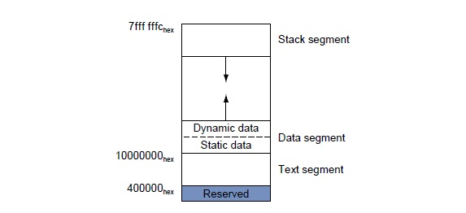
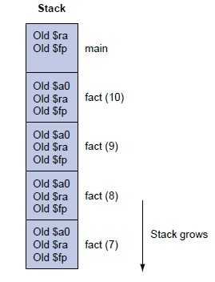
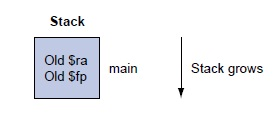
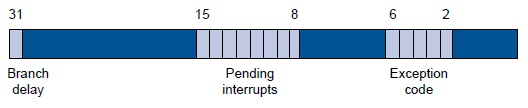
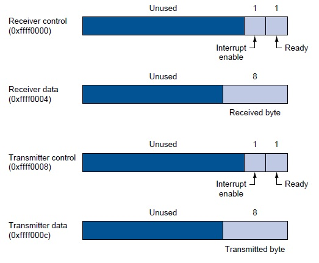

Assemblers, Linkers, and the SPIM Simulator
James R. Larus
EPFL
spim@larusstone.org
Encoding instructions as binary numbers is natural and efficient for computers.
Humans, however, have a great deal of difficulty understanding and manipulating
these numbers. People read and write symbols (words) much better than long sequences
of digits. Chapter 2 showed that we need not choose between numbers and words
because computer instructions can be represented in many ways. Humans can write
and read symbols, and computers can execute the equivalent binary numbers. This
appendix describes the process by which a human-readable program is translated
into a form that a computer can execute, provides a few hints about writing
assembly programs, and explains how to run these programs on SPIM, a simulator
that executes MIPS programs. UNIX, Windows, and Mac OS X versions of the SPIM
simulator are available on the CD.
Assembly language is the symbolic representation of a computer’s binary
encoding— machine language. Assembly language
is more readable than machine language because it uses symbols instead of bits.
The symbols in assembly language name commonly occurring bit patterns, such
as opcodes and register specifiers, so people can read and remember them. In
addition, assembly language permits programmers to use labels to identify
and name particular memory words that hold instructions or data.

Figure 1.1 The process that produces
an executable file. An assembler translates a file of assembly language into
an object file, which is linked with other files and libraries into an executable
file.
A tool called an assembler translates assembly language
into binary instructions. Assemblers provide a friendlier representation than a
computer’s 0s and 1s that simplifies writing and reading programs. Symbolic names for
operations and locations are one facet of this representation. Another facet is
programming facilities that increase a program’s clarity. For
example, macros, discussed earlier, enable a programmer to
extend the assembly language by defining new operations.
An assembler reads a single assembly language source file and produces
an object file containing machine instructions and bookkeeping information
that helps combine several object files into a program. Figure 1.1 illustrates
how a program is built. Most programs consist of several files—also called
modules — that are written, compiled, and assembled independently. A program
may also use prewritten routines supplied in a program library . A module
typically contains references to subroutines and data defined in other
modules and in libraries. The code in a module cannot be executed when it contains
unresolved references to labels in other
object files or libraries. Another tool, called a linker,
combines a collection of object and library files into an executable
file, which a computer can run.
To see the advantage of assembly language, consider the following sequence
of figures, all of which contain a short subroutine that computes and prints
the sum of the squares of integers from 0 to 100. Figure 1.2 shows the machine
language that a MIPS computer executes. With considerable effort, you could
use the opcode and instruction format tables in Chapter 2 to translate the instructions
into a symbolic program similar to Figure 1.3. This form of the routine is
much easier to read because operations and operands are written with symbols,
rather than with bit patterns. However, this assembly language is still difficult
to follow because memory locations are named by their address, rather than by
a symbolic label.
00100111101111011111111111100000 10101111101111110000000000010100 10101111101001000000000000100000
10101111101001010000000000100100 10101111101000000000000000011000 10101111101000000000000000011100
10001111101011100000000000011100 10001111101110000000000000011000 00000001110011100000000000011001
00100101110010000000000000000001 00101001000000010000000001100101 10101111101010000000000000011100
00000000000000000111100000010010 00000011000011111100100000100001 00010100001000001111111111110111
10101111101110010000000000011000 00111100000001000001000000000000 10001111101001010000000000011000
00001100000100000000000011101100 00100100100001000000010000110000 10001111101111110000000000010100
00100111101111010000000000100000 00000011111000000000000000001000 00000000000000000001000000100001
Figure 1.2 MIPS machine language code for a routine to compute and print
the sum of the squares of integers between 0 and 100.
Figure 1.4 shows assembly language that labels memory addresses with mnemonic
names. Most programmers prefer to read and write this form. Names that begin
with a period, for example .data and .globl, are assembler
directives that tell the assembler how to translate a program but
do not produce machine instructions. Names followed by a colon, such as str
or main, are labels that name the next memory location. This program is as readable
as most assembly language programs (except for a glaring lack of comments),
but it is still difficult to follow because many simple operations are required
to accomplish simple tasks and because assembly language’s lack of control flow
constructs provides few hints about the program’s operation.
By contrast, the C routine in Figure 1.5 is both shorter and clearer since
variables have mnemonic names and the loop is explicit rather than constructed
with branches. In fact, the C routine is the only one that we wrote. The other
forms of the program were produced by a C compiler and assembler.
In general, assembly language plays two roles (see Figure 1.6). The first
role is the output language of compilers. A compiler translates a program
written in a high-level language (such as C or Pascal) into an equivalent
program in machine or assembly language. The high-level language is called the
source language, and the compiler’s
output is its target language.
addiu $29, $29, -32
sw $31, 20($29)
sw $4, 32($29)
sw $5, 36($29)
sw $0, 24($29)
sw $0, 28($29)
lw $14, 28($29)
lw $24, 24($29)
multu $14, $14
addiu $8, $14, 1
slti $1, $8, 101
sw $8, 28($29)
mflo $15
addu $25, $24, $15
bne $1, $0, -9
sw $25, 24($29)
lui $4, 4096
lw $5, 24($29)
jal 1048812
addiu $4, $4, 1072
lw $31, 20($29)
addiu $29, $29, 32
jr $31
move $2, $0
Figure 1.3 The same routine written in assembly language. However,
the code for the routine does not label registers or memory locations nor include
comments.
Assembly language’s other role is as a language in which to write programs.
This role used to be the dominant one. Today, however, because of larger main
memories and better compilers, most programmers write in a high-level language
and rarely, if ever, see the instructions that a computer executes. Nevertheless,
assembly language is still important to write programs in which speed or size
are critical or to exploit hardware features that have no analogues in high-level
languages.
Although this appendix focuses on MIPS assembly language, assembly programming
on most other machines is very similar. The additional instructions and address
modes in CISC machines, such as the VAX, can make assembly programs shorter
but do not change the process of assembling a program or provide assembly language
with the advantages of high-level languages such as type-checking and structured
control flow.
.text
.align 2
.globl main
main:
subu $sp, $sp, 32
sw $ra, 20($sp)
sd $a0, 32($sp)
sw $0, 24($sp)
sw $0, 28($sp)
loop:
lw $t6, 28($sp)
mul $t7, $t6, $t6
lw $t8, 24($sp)
addu $t9, $t8, $t7
sw $t9, 24($sp)
addu $t0, $t6, 1
sw $t0, 28($sp)
ble $t0, 100, loop
la $a0, str
lw $a1, 24($sp)
jal printf
move $v0, $0
lw $ra, 20($sp)
addu $sp, $sp, 32
jr $ra
.data
.align 0
str:
.asciiz "The sum from 0 .. 100 is %d\n"
Figure 1.4 The same routine written in assembly language with labels, but no
comments. The commands that start with periods are assembler
directives. .text indicates that succeeding lines contain instructions. .data
indicates that they contain data. .align n indicates that the items on the succeeding
lines should be aligned on a 2 n byte boundary. Hence, .align 2 means
the next item should be on a word boundary. .globl main declares that main is a global
symbol that should be visible to code stored in other files. Finally, .asciiz stores a
null-terminated string in memory.
The primary reason to program in assembly language, as opposed to an available
high-level language, is that the speed or size of a program is critically important.
For example, consider a computer that controls a piece of machinery, such as
a car’s brakes. A computer that is incorporated in another device, such as a
car, is called an embedded computer. This type of computer needs to respond
rapidly and predictably to events in the outside world. Because a compiler introduces
uncertainty about the time cost of operations, programmers may find it difficult
to ensure that a high-level language program responds within a definite time
inter-val—say, 1 millisecond after a sensor detects that a tire is skidding.
An assembly language programmer, on the other hand, has tight control over which
instructions execute. In addition, in embedded applications, reducing a program’s
size, so that it fits in fewer memory chips, reduces the cost of the embedded
computer.
#include<stdio.h>
int
main (int argc, char *argv[])
{
int i; int sum = 0;
for (i = 0; i <= 100; i = i + 1) sum = sum + i * i;
printf ("The sum from 0 .. 100 is %d\n", sum);
}
Figure 1.5 The routine written in the C programming language.

Figure 1.6 Assembly language
either is written by a programmer or is the output of a compiler.
A hybrid approach, in which most of a program is written in a high-level language and
time-critical sections are written in assembly language, builds on the strengths of both
languages. Programs typically spend most of their time executing a small fraction of the
program’s source code. This observation is just the principle of locality that
underlies caches.
Program profiling measures where a program spends its time and can find the
time-critical parts of a program. In many cases, this portion of the program
can be made faster with better data structures or algorithms. Sometimes, however,
significant performance improvements only come from recoding a critical portion
of a program in assembly language.
This improvement is not necessarily an indication that the high-level language’s
compiler has failed. Compilers typically are better than programmers at producing
uniformly high-quality machine code across an entire program. Programmers, however,
understand a program’s algorithms and behavior at a deeper level than a compiler
and can expend considerable effort and ingenuity improving small sections of
the program. In particular, programmers often consider several procedures simultaneously
while writing their code. Compilers typically compile each procedure in isolation
and must follow strict conventions governing the use of registers at procedure
boundaries. By retaining commonly used values in registers, even across procedure
boundaries, programmers can make a program run faster.
Another major advantage of assembly language is the ability to exploit specialized
instructions, for example, string copy or pattern-matching instructions. Compilers,
in most cases, cannot determine that a program loop can be replaced by a single
instruction. However, the programmer who wrote the loop can replace it easily
with a single instruction.
Currently, a programmer’s advantage over a compiler has become difficult
to maintain as compilation techniques improve and machines’ pipelines increase
in complexity (Chapter 6).
The final reason to use assembly language is that no high-level language
is available on a particular computer. Many older or specialized computers do
not have a compiler, so a programmer’s only alternative is assembly language.
Assembly language has many disadvantages that strongly argue against its
widespread use. Perhaps its major disadvantage is that programs written in assembly
language are inherently machine-specific and must be totally rewritten to run
on another computer architecture. The rapid evolution of computers discussed
in Chapter 1 means that architectures become obsolete. An assembly language
program remains tightly bound to its original architecture, even after the computer
is eclipsed by new, faster, and more cost-effective machines.
Another disadvantage is that assembly language programs are longer than the
equivalent programs written in a high-level language. For example, the C program
in Figure 1.5 is 11 lines long, while the assembly program in Figure 1.4
is 31 lines long. In more complex programs, the ratio of assembly to high-level
language (its expansion factor ) can be much larger than the factor of
three in this example. Unfortunately, empirical studies have shown that programmers
write roughly the same number of lines of code per day in assembly as in high-level
languages. This means that programmers are roughly x times more productive
in a high-level language, where x is the assembly language expansion factor.
To compound the problem, longer programs are more difficult to read and understand
and they contain more bugs. Assembly language exacerbates the problem because
of its complete lack of structure. Common programming idioms, such as if-then
statements and loops, must be built from branches and jumps. The resulting
programs are hard to read because the reader must reconstruct every higher-level
construct from its pieces and each instance of a statement may be slightly different.
For example, look at Figure 1.4 and answer these questions: What type of loop
is used? What are its lower and upper bounds?
Elaboration:
Compilers can produce machine language directly instead of relying on an
assembler. These compilers typically execute much faster than those that invoke an
assembler as part of compilation. However, a compiler that generates machine language
must perform many tasks that an assembler normally handles, such as resolving addresses
and encoding instructions as binary numbers. The trade-off is between compilation speed
and compiler simplicity.
Elaboration:
Despite these considerations, some embedded applications are written in a high-level
language. Many of these applications are large and complex programs that must be
extremely reliable. Assembly language programs are longer and more difficult to write
and read than high-level language programs. This greatly increases the cost of writing
an assembly language program and makes it extremely difficult to verify the correctness
of this type of program. In fact, these considerations led the Department of Defense,
which pays for many complex embedded systems, to develop Ada, a new high-level language
for writing embedded systems.
An assembler translates a file of assembly language statements into a file
of binary machine instructions and binary data. The translation process has
two major parts. The first step is to find memory locations with labels so the
relationship between symbolic names and addresses is known when instructions
are translated. The second step is to translate each assembly statement by combining
the numeric equivalents of opcodes, register specifiers, and labels into a legal
instruction. As shown in Figure 1.1, the assembler produces an output file,
called an object file, which contains the machine instructions, data,
and bookkeeping information.
An object file typically cannot be executed because it references procedures
or data in other files. A label is
external (also called
global) if the labeled object can be referenced from files
other than the one in which it is defined. A label is local if the object can be
used only within the file in which it is defined. In most assemblers, labels are local
by default and must be explicitly declared global. Subroutines and global variables
require external labels since they are referenced from many files in a
program.Local labels hide names that should not be visible to
other modules—for example, static functions in C, which can only be called by other
functions in the same file. In addition, compiler-generated names—for example, a name
for the instruction at the beginning of a loop—are local so the compiler need not
produce unique names in every file.
Local and Global Labels
Consider the program in Figure 1.4. The subroutine has an external (global) label
main. It also contains two local labels—loop and str—that are only visible with
this assembly language file. Finally, the routine also contains an unresolved reference
to an external label printf, which is the library routine that prints values. Which
labels in Figure 1.4 could be referenced from another file?
Only global labels are visible outside of a file, so the only label that
could be referenced from another file is main.
Since the assembler processes each file in a program individually and in
isolation, it only knows the addresses of local labels. The assembler depends
on another tool, the linker, to combine a collection of object files and libraries
into an executable file by resolving external labels. The assembler assists
the linker by providing lists of labels and unresolved references.
However, even local labels present an interesting challenge to an assembler.
Unlike names in most high-level languages, assembly labels may be used before
they are defined. In the example, in Figure 1.4, the label str is used by
the la instruction before it is defined. The possibility of a
forward reference, like this forces an
assembler to translate a program in two steps: first find all labels is used
before it is defined. and then produce instructions. In the example, when the
assembler sees the la instruction, it does not know where the word labeled str
is located or even whether str labels an instruction or datum.
An assembler’s first pass reads each line of an assembly file and breaks
it into its component pieces. These pieces, which are called lexemes,
are individual words, numbers, and punctuation characters. For example, the
line
ble $t0, 100, loop
contains six lexemes: the opcode ble, the register specifier $t0, a comma,
the number 100, a comma, and the symbol loop.
If a line begins with a label, the assembler records in its
symbol table the name of the label and the
address of the memory word that the instruction occupies. The assembler then
calculates how many words of memory the instruction on the current line will
occupy. By keeping track of the instructions’ sizes, the assembler can determine
where the next instruction goes. To compute the size of a variable-length instruction,
like those on the VAX, an assembler has to examine it in detail. Fixed-length
instructions, like those on MIPS, on the other hand, require only a cursory
examination. The assembler performs a similar calculation to compute the space
required for data statements. When the assembler reaches the end of an assembly
file, the symbol table records the location of each label defined in the file.
The assembler uses the information in the symbol table during a second pass over the
file, which actually produces machine code. The assembler again examines each line in
the file. If the line contains an instruction, the assembler combines the binary
representations of its opcode and operands (register specifiers or memory address) into
a legal instruction. Instructions and data words that reference an external symbol
defined in another file cannot be completely assembled (they are unresolved) since the
symbol’s address is not in the symbol table. An assembler does not complain about
unresolved references since the corresponding label is likely to be defined in another
file
Assembly language is a programming language. Its principal difference from
high-level languages such as BASIC, Java, and C is that assembly language provides
only a few, simple types of data and control flow. Assembly language programs
do not specify the type of value held in a variable. Instead, a programmer must
apply the appropriate operations (e.g., integer or floating-point addition)
to a value. In addition, in assembly language, programs must implement all control
flow with go to s. Both factors make assembly language programming for
any machine—MIPS or 80x86—more difficult and error-prone than writing in a high-level
language.
Elaboration:
If an assembler’s speed is important, this two-step process can be done in one
pass over the assembly file with a technique known as back
patching. In its pass over the file, the assembler builds a (possibly incomplete)
binary representation of every instruction. If the instruction references a label that
has not yet been defined, the assembler records the label and instruction in a
table. When a label is defined, the assembler consults this table to find all
instructions that contain a forward reference to the label. The assembler goes back and
corrects their binary representation to incorporate the address of the
label. Backpatching speeds assembly because the assembler only reads its input
once. However, it requires an assembler to hold the entire binary representation of a
program in memory so instructions can be backpatched. This requirement can limit the
size of programs that can be assembled. The process is complicated by machines with
several types of branches that span different ranges of instructions. When the assembler
first sees an unresolved label in a branch instruction, it must either use the largest
possible branch or risk having to go back and readjust many instructions to make room
for a larger branch.
Assemblers produce object files. An object file on UNIX contains six distinct
sections (see Figure 2.1):
- The object file header describes the size and position of the
other pieces of the file.
- The text segment contains the machine
language code for routines in the source file. These routines may be unexecutable
because of unresolved references.
- The data segment contains a binary
representation of the data in the source file. The data also may be incomplete
because of unresolved references to labels in other files.
- The relocation information identifies
instructions and data words that depend on absolute
addresses. These references must change if portions of the program
are moved in memory.
- The symbol table associates addresses with external labels in
the source file and lists unresolved references.
- The debugging information contains a concise description of the
way in which the program was compiled, so a debugger can find which instruction
addresses correspond to lines in a source file and print the data structures
in readable form.
The assembler produces an object file that contains a binary representation of the
program and data and additional information to help link pieces of a program. This
relocation information is necessary because the assembler does not know which memory
locations a procedure or piece of data will occupy after it is linked with the rest of
the program. Procedures and data from a file are stored in a contiguous piece of memory,
but the assembler does not know where this memory will be located. The assembler also
passes some symbol table entries to the linker. In particular, the assembler must record
which external symbols are defined in a file and what unresolved references occur in a
file.
Figure 2.1 Object file. A UNIX
assembler produces an object file with six distinct sections.
Elaboration:
For convenience, assemblers assume each file starts at the same address (for example,
location 0) with the expectation that the linker will relocate the code and data
when they are assigned locations in memory. The assembler produces relocation
information, which contains an entry describing each instruction or data word in the
file that references an absolute address. On MIPS, only the subroutine call,
load, and store instructions reference absolute addresses. Instructions that
use PC-relative addressing, such as branches, need not be relocated.
Assemblers provide a variety of convenience features that help make assembler
programs short and easier to write, but do not fundamentally change assembly
language. For example, data layout directives allow a programmer to describe
data in a more concise and natural manner than its binary representation.
In Figure 1.4, the directive
.asciiz “The sum from 0 .. 100 is %d\n”
stores characters from the string in memory. Contrast this line with the
alternative of writing each character as its ASCII value (Figure 2.21 in Chapter
2 describes the ASCII encoding for characters):
.byte 84, 104, 101, 32, 115, 117, 109, 32
.byte 102, 114, 111, 109, 32, 48, 32, 46
.byte 46, 32, 49, 48, 48, 32, 105, 115
.byte 32, 37, 100, 10, 0
The .asciiz directive is easier to read because it represents characters as letters,
not binary numbers. An assembler can translate characters to their binary representation
much faster and more accurately than a human. Data layout
directives specify data in a human-readable form that the assembler translates to
binary.
String Directive
Define the sequence of bytes produced by this directive:
.asciiz “The quick brown fox jumps over the lazy dog”
.byte 84, 104, 101, 32, 113, 117, 105, 99 .byte 107, 32, 98, 114, 111, 119,
110, 32 .byte 102, 111, 120, 32, 106, 117, 109, 112 .byte 115, 32, 111, 118,
101, 114, 32, 116 .byte 104, 101, 32, 108, 97, 122, 121, 32 .byte 100, 111,
103, 0
Macros are a pattern-matching and replacement facility that provide
a simple mechanism to name a frequently used sequence of instructions. Instead
of repeatedly typing the same instructions every time they are used, a programmer
invokes the macro and the assembler replaces the macro call with the corresponding
sequence of instructions. Macros, like subroutines, permit a programmer to create
and name a new abstraction for a common operation. Unlike subroutines, however,
macros do not cause a subroutine call and return when the program runs since
a macro call is replaced by the macro’s body when the program is assembled.
After this replacement, the resulting assembly is indistinguishable from the
equivalent program written without macros.
Macros
As an example, suppose that a programmer needs to print many numbers. The
library routine printf accepts a format string and one or more values to print
as its arguments. A programmer could print the integer in register $7 with the
following instructions:
.data
int_str: .asciiz“%d”
.text
la $a0, int_str # Load string address into first arg
mov $a1, $7 # Load value into second arg
jal printf # Call the printf routine
The .data directive tells the assembler to store the string in the program’s
data segment, and the .text directive tells the assembler to store the instructions
in its text segment.
However, printing many numbers in this fashion is tedious and produces a
verbose program that is difficult to understand. An alternative is to introduce
a macro, print_int, to print an integer:
int_str:.asciiz “%d”
.text
.macro print_int($arg)
la $a0, int_str # Load string address into first arg
mov $a1, $arg # Load macro’s parameter ($arg) into second arg
jal printf # Call the printf routine
.end_macro
print_int($7)
The macro has a formal parameter, $arg,
that names the argument to the macro. When the macro is expanded, the argument
from a call is substituted for the formal parameter throughout the macro’s body.
Then the assembler replaces the call with the macro’s newly expanded body. In
the first call on print_int, the argument is $7, so the macro expands to the
code
la $a0, int_str
mov $a1, $7
jal printf
In a second call on print_int, say, print_int($t0), the argument is $t0,
so the macro expands to
la $a0, int_str
mov $a1, $t0
jal printf
What does the call print_int($a0) expand to?
la $a0, int_str
mov $a1, $a0
jal printf
This example illustrates a drawback of macros. A programmer who uses this
macro must be aware that print_int uses register $a0 and so cannot correctly
print the value in that register.
Hardware-Software Interface:
Some assemblers also implement pseudoinstructions, which are instructions
provided by an assembler but not implemented in hardware. Chapter 2 contains many
examples of how the MIPS assembler synthesizes pseudoinstructions and addressing modes
from the spartan MIPS hardware instruction set. For example, The assembler synthesizes
the blt instruction from two other instructions: slt and bne. By extending the
instruction set, the MIPS assembler makes assembly language programming easier without
complicating the hardware. Many pseudoinstructions could also be simulated with macros,
but the MIPS assembler can generate better code for these instructions because it can
use a dedicated register ($at) and is able to optimize the generated code.
Elaboration
Assemblers
conditionally assemble pieces of code, which permits a
programmer to include or exclude groups of instructions when a program is
assembled. This feature is particularly useful when several versions of
a program differ by a small amount. Rather than keep these programs in separate
files—which greatly complicates fixing bugs in the common code—programmers
typically merge the versions into a single file. Code particular to one
version is conditionally assembled, so it can be excluded when other versions
of the program are assembled.
If macros and conditional assembly are useful, why do assemblers for
UNIX systems rarely, if ever, provide them? One reason is that most programmers
on these systems write programs in higher-level languages like C. Most of
the assembly code is produced by compilers, which find it more convenient
to repeat code rather than define macros. Another reason is that other tools
on UNIX—such as cpp, the C preprocessor, or m4, a general macro processor—can
provide macros and conditional assembly for assembly language programs.
Separate compilation permits a program
to be split into pieces that are stored in different files. Each file contains
a logically related collection of subroutines and data structures that form
a module in a larger program. A file can be compiled and assembled independently
of other files, so changes to one module do not require recompiling the entire
program. As we discussed above, separate compilation necessitates the additional
step of linking to combine object files from separate modules and fix their
unresolved references.
The tool that merges these files is the linker (see Figure 3.1).
It performs three tasks:
- Searches the program libraries to find library routines used by the
program
- Determines the memory locations that code from each module will occupy
and relocates its instructions by adjusting absolute references
- Resolves references among files
A linker’s first task is to ensure that a program contains no undefined labels.
The linker matches the external symbols and unresolved references from a pro-gram’s
files. An external symbol in one file resolves a reference from another file
if both refer to a label with the same name. Unmatched references mean a symbol
was used, but not defined anywhere in the program.
Unresolved references at this stage in the linking process do not necessarily
mean a programmer made a mistake. The program could have referenced a library
routine whose code was not in the object files passed to the linker. After matching
symbols in the program, the linker searches the system’s program libraries to
find predefined subroutines and data structures that the program references.
The basic libraries contain routines that read and write data, allocate and
deallocate memory, and perform numeric operations. Other libraries contain routines
to access a database or manipulate terminal windows. A program that references
an unresolved symbol that is not in any library is erroneous and cannot be linked.
When the program uses a library routine, the linker extracts the routine’s code
from the library and incorporates it into the program text segment. This new
routine, in turn, may depend on other library routines, so the linker continues
to fetch other library routines until no external references are unresolved
or a routine cannot be found.
If all external references are resolved, the linker next determines the memory
locations that each module will occupy. Since the files were assembled in isolation, the
assembler could not know where a module’s instructions or data will be placed
relative to other modules. When the linker places a module in memory, all absolute
references must be relocated to reflect its true location. Since the linker has
relocation information that identifies all relocatable references, it can efficiently
find and backpatch these references.

Figure 3.1 The linker searches a
collection of object files and program libraries to find nonlocal routines used in a
program, combines them into a single executable file, and resolves references between
routines in different files.
The linker produces an executable file that can run on a computer. Typically,
this file has the same format as an object file, except that it contains no
unresolved references or relocation information.
A program that links without an error can be run. Before being run, the program
resides in a file on secondary storage, such as a disk. On UNIX systems, the operating
system kernel brings a program into memory and starts it running. To start a program,
the operating system performs the following steps:
- Reads the executable file’s header to determine the size of the text
and data segments.
- Creates a new address space for the program. This address space is large
enough to hold the text and data segments, along with a stack segment.
- Copies instructions and data from the executable file into the new address
space.
- Copies arguments passed to the program onto the stack.
- Initializes the machine registers. In general, most registers are cleared,
but the stack pointer must be assigned the address of the first free stack
location.
- Jumps to a start-up routine that copies the program’s arguments from
the stack to registers and calls the program’s main routine. If the main
routine returns, the start-up routine terminates the program with the exit
system call.
The next few sections elaborate the description of the MIPS architecture
presented earlier in the book. Earlier chapters focused primarily on hardware
and its relationship with low-level software. These sections focus primarily
on how assembly language programmers use MIPS hardware. These sections describe
a set of conventions followed on many MIPS systems. For the most part, the hardware
does not impose these conventions. Instead, they represent an agreement among
programmers to follow the same set of rules so that software written by different
people can work together and make effective use of MIPS hardware.
Systems based on MIPS processors typically divide memory into three parts
(see Figure 5.1). The first part, near the bottom of the address space (starting
at address 400000hex), is the text segment, which holds the program’s
instructions.
The second part, above the text segment, is the data segment, which
is further divided into two parts.
Static data (starting at address 10000000hex) contains objects
whose size is known to the compiler and whose lifetime—the interval during which a
program can access them—is the program’s entire execution. For example, in C,
global variables are statically allocated since they can be referenced anytime during a
program’s execution. The linker both assigns static objects to locations in the data
segment and resolves references to these objects.

Figure 5.1 Layout of memory.
Hardware-Software Interface
Because the data segment begins far above the program at address 10000000
hex, load and store instructions cannot directly reference data objects with
their16-bit offset fields. For example, to load the word in the data segment at address
10010020
hexinto register $v0 requires two instructions:
lui $s0, 0x1001 # 0x1001 means 1001 base 16
lw $v0, 0x0020($s0) # 0x10010000 + 0x0020 = 0x10010020
(The 0x before a number means that it is a hexadecimal value. For example,
0x8000 is 8000hex or 32,768 ten .)
To avoid repeating the lui instruction at every load and store, MIPS systems
typically dedicate a register ($gp) as a global pointer to the static
data segment. This register contains address 10008000 hex, so load
and store instructions can use their signed 16-bit offset fields to access the
first 64 KB of the static data segment. With this global pointer, we can rewrite
the example as a single instruction:
lw $v0, 0x8020($gp)
Of course, a global pointer register makes addressing locations 10000000
hex– 10010000 hexfaster than other heap locations. The
MIPS compiler usually stores global variables in this area because these
variables have fixed locations and fit better than other global data, such as
arrays.
Immediately above static data is dynamic data. This data, as its name implies,
is allocated by the program as it executes. In C programs, the malloc library routine
finds and returns a new block of memory. Since a compiler cannot predict how much memory
a program will allocate, the operating system expands the dynamic data area to meet
demand. As the upward arrow in the figure indicates, malloc expands the dynamic area
with the sbrk system call, which causes the operating system to add more pages to the
program’s virtual address space immediately above the dynamic data segment.
The third part, the program stack segment,
resides at the top of the virtual address space (starting at address 7fffffff
hex). Like dynamic data, the maximum size of a pro-gram’s stack
is not known in advance. As the program pushes values on the stack, the operating
system expands the stack segment down, toward the data segment.
This three-part division of memory is not the only possible one. However,
it has two important characteristics: the two dynamically expandable segments
are as far apart as possible, and they can grow to use a program’s entire address
space.
Conventions governing the use of registers are necessary when procedures
in a program are compiled separately. To compile a particular procedure, a compiler
must know which registers it may use and which registers are reserved for other
procedures. Rules for using registers are called register
use or procedure call conventions.
As the name implies, these rules are, for the most part, conventions
followed by software rather than rules enforced by hardware. However, most compilers
and programmers try very hard to follow these conventions because violating
them causes insidious bugs.
The calling convention described in this section is the one used by the gcc
compiler. The native MIPS compiler uses a more complex convention that is slightly
faster.
The MIPS CPU contains 32 general-purpose registers that are numbered 0–31.
Register $0 always contains the hardwired value 0.
- Registers $at (1), $k0 (26), and $k1 (27) are reserved for the assembler
and operating system and should not be used by user programs or compilers.
- Registers $a0–$a3 (4–7) are used to pass the first four arguments to
routines (remaining arguments are passed on the stack). Registers $v0 and
$v1 (2, 3) are used to return values from functions.
- Registers $t0–$t9 (8–15, 24, 25) are caller-saved
registers that are used to hold temporary quantities that need not be
preserved across calls.
- Registers $s0–$s7 (16–23) are callee-saved
registers that hold long-lived values that should be preserved
across calls.
- Register $gp (28) is a global pointer that points to the middle of a
64K block of memory in the static data segment.
- Register $sp (29) is the stack pointer, which points to the last location
on the stack. Register $fp (30) is the frame pointer. The jal instruction
writes register $ra (31), the return address from a procedure call. These
two registers are explained in the next section.
The two-letter abbreviations and names for these registers—for example, $sp
for the stack pointer—reflect the registers’ intended uses in the procedure
call convention. In describing this convention, we will use the names instead
of register numbers. Figure 6.1 lists the registers and describes their intended
uses.
This section describes the steps that occur when one procedure (the caller
) invokes another procedure (the callee ). Programmers who write in
a high-level language (like C or Pascal) never see the details of how one procedure
calls another because the compiler takes care of this low-level bookkeeping.
However, assembly language programmers must explicitly implement every procedure
call and return.
Most of the bookkeeping associated with a call is centered around a block
of memory called a procedure call frame.
This memory is used for a variety of purposes:
- To hold values passed to a procedure as arguments
- To save registers that a procedure may modify, but which the procedure’s
caller does not want changed
- To provide space for variables local to a procedure
In most programming languages, procedure calls and returns follow a strict
last-in, first-out (LIFO) order, so this memory can be allocated and deallocated
on a stack, which is why these blocks of memory are sometimes called stack frames.
Figure 6.2 shows a typical stack frame. The frame consists of the memory
between the frame pointer ($fp), which points to the first word of the frame,
and the stack pointer ($sp), which points to the last word of the frame. The
stack grows down from higher memory addresses, so the frame pointer points above
the stack pointer. The executing procedure uses the frame pointer to quickly
access values in its stack frame. For example, an argument in the stack frame
can be loaded into register $v0 with the instruction
| Register name |
Number |
Usage |
| $zero |
0 |
constant 0 |
| $at |
1 |
reserved for assembler |
| $v0 |
2 |
expression evaluation and results of a
function |
| $v1 |
3 |
expression evaluation and results of a
function |
| $a0 |
4 |
argument 1 |
| $a1 |
5 |
argument 2 |
| $a2 |
6 |
argument 3 |
| $a3 |
7 |
argument 4 |
| $t0 |
8 |
temporary (not preserved across call)
|
| $t1 |
9 |
temporary (not preserved across call)
|
| $t2 |
10 |
temporary (not preserved across call)
|
| $t3 |
11 |
temporary (not preserved across call)
|
| $t4 |
12 |
temporary (not preserved across call)
|
| $t5 |
13 |
temporary (not preserved across call)
|
| $t6 |
14 |
temporary (not preserved across call)
|
| $t7 |
15 |
temporary (not preserved across call)
|
| $s0 |
16 |
saved temporary (preserved across call)
|
| $s1 |
17 |
saved temporary (preserved across call)
|
| $s2 |
18 |
saved temporary (preserved across call)
|
| $s3 |
19 |
saved temporary (preserved across call)
|
| $s4 |
20 |
saved temporary (preserved across call)
|
| $s5 |
21 |
saved temporary (preserved across call)
|
| $s6 |
22 |
saved temporary (preserved across call)
|
| $s7 |
23 |
saved temporary (preserved across call)
|
| $t8 |
24 |
temporary (not preserved across call)
|
| $t9 |
25 |
temporary (not preserved across call)
|
| $k0 |
26 |
reserved for OS kernel |
| $k1 |
27 |
reserved for OS kernel |
| $gp |
28 |
pointer to global area |
| $sp |
29 |
stack pointer |
| $fp |
30 |
frame pointer |
| $ra |
31 |
return address (used by function call)
|
Figure 6.1 MIPS registers and usage convention.
lw $v0, 0($fp)

Figure 6.2 Layout of a stack
frame. The frame pointer ($fp) points to the first word in the currently
executing procedure’s stack frame. The stack pointer ($sp) points to the last
word of frame. The first four arguments are passed in registers, so the fifth
argument is the first one stored on the stack.
A stack frame may be built in many different ways; however, the caller and
callee must agree on the sequence of steps. The steps below describe the calling
convention used on most MIPS machines. This convention comes into play at three
points during a procedure call: immediately before the caller invokes the callee,
just as the callee starts executing, and immediately before the callee returns
to the caller. In the first part, the caller puts the procedure call arguments
in standard places and invokes the callee to do the following:
- Pass arguments. By convention, the first four arguments are passed in
registers $a0–$a3. Any remaining arguments are pushed on the stack and appear
at the beginning of the called procedure’s stack frame.
- Save caller-saved registers. The called procedure can use these registers
($a0–$a3 and $t0–$t9) without first saving their value. If the caller expects
to use one of these registers after a call, it must save its value before
the call.
- Execute a jal instruction, which jumps to the callee’s first instruction
and saves the return address in register $ra.
Before a called routine starts running, it must take the following steps
to set up its stack frame:
- Allocate memory for the frame by subtracting the frame’s size from the
stack pointer.
- Save callee-saved registers in the frame. A callee must save the values
in these registers ($s0–$s7, $fp, and $ra) before altering them since the
caller expects to find these registers unchanged after the call. Register
$fp is saved by every procedure that allocates a new stack frame. However,
register $ra only needs to be saved if the callee itself makes a call. The
other calleesaved registers that are used also must be saved.
- Establish the frame pointer by adding the stack frame’s size minus 4
to $sp and storing the sum in register $fp.
Hardware-Software Interface
The MIPS register use convention provides callee- and caller-saved registers because
both types of registers are advantageous in different circumstances. Callee-saved
registers are better used to hold long-lived values, such as variables from a user’s
program. These registers are only saved during a procedure call if the callee expects to
use the register. On the other hand, caller-saved registers are better used to hold
short-lived quantities that do not persist across a call, such as immediate values in an
address calculation. During a call, the callee can also use these registers for
short-lived temporaries.
Finally, the callee returns to the caller by executing the following steps:
- If the callee is a function that returns a value, place the returned value
in register $v0.
- Restore all callee-saved registers that were saved upon procedure entry.
- Pop the stack frame by adding the frame size to $sp.
- Return by jumping to the address in register $ra.
Elaboration:
A programming language that does not permit recursive
procedures— procedures that call themselves either directly or
indirectly through a chain of calls—need not allocate frames on a stack. In a
nonrecursive language, each procedure’s frame may be statically allocated
since only one invocation of a procedure can be active at a time. Older versions
of Fortran prohibited recursion because statically allocated frames produced
faster code on some older machines. However, on load-store architectures like
MIPS, stack frames may be just as fast because a frame pointer register points
directly to
the active stack frame, which permits a single load or store instruction
to access values in the frame. In addition, recursion is a valuable programming
technique.
main () {
printf ("The factorial of 10 is %d\n", fact (10));
}
int fact (int n) {
if (n < 1)
return (1);
else
return (n * fact (n - 1));
}
which computes and prints 10! (the factorial of 10, 10! = 10 × 9 × . . .
× 1). fact is a recursive routine that computes n ! by multiplying
n times ( n – 1)!. The assembly code for this routine illustrates how
programs manipulate stack frames.
Upon entry, the routine main creates its stack frame and saves the two calleesaved
registers it will modify: $fp and $ra. The frame is larger than required for
these two registers because the calling convention requires the minimum size
of a stack frame to be 24 bytes. This minimum frame can hold four argument registers
($a0–$a3) and the return address $ra, padded to a double-word boundary (24 bytes).
Since main also needs to save $fp, its stack frame must be two words larger
(remember: the stack pointer is kept doubleword aligned).
.text
.globl main
main:
subu $sp,$sp,32 # Stack frame is 32 bytes long
sw $ra,20($sp) # Save return address
sw $fp,16($sp) # Save old frame pointer
addiu $fp,$sp,28 # Set up frame pointer
The routine main then calls the factorial routine and passes it the single
argument 10. After fact returns, main calls the library routine printf and passes
it both a format string and the result returned from fact:
li $a0,10 # Put argument (10) in $a0
jal fact # Call factorial function
la $a0,$LC # Put format string in $a0
move $a1,$v0 # Move fact result to $a1
jal printf # Call the print function
Finally, after printing the factorial, main returns. But first, it must restore
the registers it saved and pop its stack frame:
lw $ra,20($sp) # Restore return address
lw $fp,16($sp) # Restore frame pointer
addiu $sp,$sp,32 # Pop stack frame
jr $ra # Return to caller
.rdata
$LC:
.ascii “The factorial of 10 is %d\n\000”
The factorial routine is similar in structure to main. First, it creates
a stack frame and saves the callee-saved registers it will use. In addition
to saving $ra and $fp, fact also saves its argument ($a0), which it will use
for the recursive call:
lw $ra,20($sp) # Restore return address
lw $fp,16($sp) # Restore frame pointer
addiu $sp,$sp,32 # Pop stack frame
jr $ra # Return to caller
.rdata
$LC:
.ascii “The factorial of 10 is %d\n\000”
The heart of the fact routine performs the computation from the C program.
It tests if the argument is greater than 0. If not, the routine returns the
value 1. If the argument is greater than 0, the routine recursively calls itself
to compute fact(n-1) and multiplies that value times n:
lw $v0,0($fp) # Load n
bgtz $v0,$L2 # Branch if n > 0
li $v0,1 # Return 1
jr $L1 # Jump to code to return
$L2:
lw $v1,0($fp) # Load n
subu $v0,$v1,1 # Compute n - 1
move $a0,$v0 # Move value to $a0
jal fact # Call factorial function
lw $v1,0($fp) # Load n
mul $v0,$v0,$v1 # Compute fact(n-1) * n
Finally, the factorial routine restores the callee-saved registers and returns
the value in register $v0:
$L1: # Result is in $v0
lw $ra, 20($sp) # Restore $ra
lw $fp, 16($sp) # Restore $fp
addiu $sp, $sp, 32 # Pop stack
jr $ra # Return to caller
Stack in Recursive Procedure
Figure 6.3 shows the stack at the call fact(7). main runs first, so its
frame is deepest on the stack. main calls fact(10), whose stack frame is next
on the stack. Each invocation recursively invokes fact to compute the next-lowest
factorial. The stack frames parallel the LIFO order of these calls.

Figure 6.3 Stack frames during the call of fact(7).
What does the stack look like when the call to fact(10) returns?

Elaboration:
The difference between the MIPS compiler and the gcc compiler is that the MIPS
compiler usually does not use a frame pointer, so this register is available as another
callee-saved register, $s8. This change saves a couple of instructions in the procedure
call and return sequence. However, it complicates code generation because a procedure
must access its stack frame with $sp, whose value can change during a procedure’s
execution if values are pushed on the stack.
As another example, consider the following routine that computes the tak
function, which is a widely used benchmark created by Ikuo Takeuchi. This function
does not compute anything useful, but is a heavily recursive program that illustrates
the MIPS calling convention.
int tak (int x, int y, int z) {
if (y < x)
return 1 + tak (tak (x - 1, y, z),
tak (y - 1, z, x),
tak (z - 1, x, y));
else
return z;
}
int main () {
tak(18, 12, 6);
}
The assembly code for this program is below. The tak function first saves its return
address in its stack frame and its arguments in callee-saved registers, since the
routine may make calls that need to use registers $a0–$a2 and $ra. The function uses
callee-saved registers since they hold values that persist over the lifetime of the
function, which includes several calls that could potentially modify registers.
.text
.globl tak
tak:
subu $sp, $sp, 40
sw $ra, 32($sp)
sw $s0, 16($sp) # x
move $s0, $a0
sw $s1, 20($sp) # y
move $s1, $a1
sw $s2, 24($sp) # z
move $s2, $a2
sw $s3, 28($sp) # temporary
The routine then begins execution by testing if y < x. If not, it branches
to label L1, which is below.
bge $s1, $s0, L1 # if (y < x)
If y < x, then it executes the body of the routine, which contains four recursive
calls. The first call uses almost the same arguments as its parent:
addiu $a0, $s0, -1
move $a1, $s1
move $a2, $s2
jal tak # tak (x - 1, y, z)
move $s3, $v0
Note that the result from the first recursive call is saved in register $s3,
so that it can be used later. The function now prepares arguments for the second
recursive call.
addiu $a0, $s1, -1
move $a1, $s2
move $a2, $s0
jal tak # tak (y - 1, z, x)
In the instructions below, the result from this recursive call is saved in
register $s0. But, first we need to read, for the last time, the saved value
of the first argument from this register.
addiu $a0, $s2, -1
move $a1, $s0
move $a2, $s1
move $s0, $v0
jal tak # tak (z - 1, x, y)
After the three inner recursive calls, we are ready for the final recursive
call. After the call, the function’s result is in $v0 and control jumps to the
function’s epilogue.
move $a0, $s3
move $a1, $s0
move $a2, $v0
jal tak # tak (tak(...), tak(...), tak(...))
addiu $v0, $v0, 1
j L2
This code at label L1 is the consequent of the if-then-else statement.
It just moves the value of argument z into the return register and falls into
the function epilogue.
L1:
move $v0, $s2
The code below is the function epilogue, which restores the saved registers
and returns the function’s result to its caller.
L2:
lw $ra, 32($sp)
lw $s0, 16($sp)
lw $s1, 20($sp)
lw $s2, 24($sp)
lw $s3, 28($sp)
addiu $sp, $sp, 40
jr $ra
The main routine calls the tak function with its initial arguments, then
takes the computed result (7) and prints it using SPIM’s system call for printing
integers.
.globl main
main:
subu $sp, $sp, 24
sw $ra, 16($sp)
li $a0, 18
li $a1, 12
li $a2, 6
jal tak # tak(18, 12, 6)
move $a0, $v0
li $v0, 1 # print_int syscall
syscall
lw $ra, 16($sp)
addiu $sp, $sp, 24
jr $ra
The MIPS exception facility, which responds both to exceptions caused by errors
during an instruction’s execution and to external interrupts caused by I/O
devices. This section describes exception and interrupt
handling in more detail.
1 In MIPS processors, a part of the CPU called coprocessor 0
records the information that software needs to handle exceptions and interrupts.
The MIPS simulator SPIM does not implement all of coprocessor 0’s registers,
since many are not useful in a simulator or are part of the memory system, which
SPIM does not model. However, SPIM does provide the following coprocessor 0
registers:
| Register name |
Register number |
Usage |
| BadVAddr |
8 |
memory address at which an offending memory reference
occurred |
| Count |
9 |
timer |
| Compare |
11 |
value compared against timer that causes interrupt
when they match |
| Status |
12 |
interrupt mask and enable bits |
| Cause |
13 |
exception type and pending interrupt bits |
| EPC |
14 |
address of instruction that caused exception |
| Config |
16 |
configuration of machine |
1. This section discusses exceptions in the MIPS32 architecture, which is
what SPIM implementsin Version 7.0 and later. Earlier versions of SPIM implemented
the MIPS-I architecture, which handled exceptions slightly differently. Converting
programs from these versions to run on MIPS32 should not be difficult, as the
changes are limited to the Status and Cause register fields and the replacement
of the rfe instruction by the eret instruction.
These seven registers are part of coprocessor 0’s register set. They are
accessed by the mfc0 and mtc0 instructions. After an exception, register EPC
contains the address of the instruction that was executing when the exception
occurred. If the exception was caused by an external interrupt, then the instruction
will not have started executing. All other exceptions are caused by the execution
of the instruction at EPC, except when the offending instruction is in the delay
slot of a branch or jump. In that case, EPC points to the branch or jump instruction
and the BD bit is set in the Cause register. When that bit is set, the exception
handler must look at EPC + 4 for the offending instruction. However, in either
case, an exception handler properly resumes the program by returning to the
instruction at EPC.
If the instruction that caused the exception made a memory access, register
BadVAddr contains the referenced memory location’s address.
The Count register is a timer that increments at a fixed rate (by default,
every 10 milliseconds) while SPIM is running. When the value in the Count register
equals the value in the Compare register, a hardware interrupt at priority level
5 occurs.
Figure 7.1 shows the subset of the Status register fields implemented by
the MIPS simulator SPIM. The interrupt mask field contains a bit for each of
the six hardware and two software interrupt levels. A mask bit that is 1 allows
interrupts at that level to interrupt the processor. A mask bit that is 0 disables
interrupts at that level. When an interrupt arrives, it sets its interrupt pending
bit in the Cause register, even if the mask bit is disabled. When an interrupt
is pending, it will interrupt the processor when its mask bit is subsequently
enabled.
The user mode bit is 0 if the processor is running in kernel mode and 1 if it is
running in user mode. On SPIM, this bit is fixed at 1, since the SPIM processor does not
implement kernel mode. The exception level bit is normally 0, but is set to 1 after an
exception occurs. When this bit is 1, interrupts are disabled and the EPC is not updated
if another exception occurs. This bit prevents an exception handler from being disturbed
by an interrupt or exception, but it should be reset when the handler finishes. If the
interrupt enable bit is 1, interrupts are allowed. If it is 0, they are disabled.

Figure 7.1 The Status register.

Figure 7.2 The Cause register.
Figure 7.2 shows the subset of Cause register fields that SPIM implements.
The branch delay bit is 1 if the last exception occurred in an instruction executed
in the delay slot of a branch. The interrupt pending bits become 1 when an interrupt
is raised at a given hardware or software level. The exception code register
describes the cause of an exception through the following codes:
| Number |
Name |
Cause of exception |
| 0 |
Int |
interrupt (hardware) |
| 4 |
AdEL |
address error exception (load or instruction fetch)
|
| 5 |
AdES |
address error exception (store) |
| 6 |
IBE |
bus error on instruction fetch |
| 7 |
DBE |
bus error on data load or store |
| 8 |
Sys |
syscall exception |
| 9 |
Bp |
breakpoint exception |
| 10 |
RI |
reserved instruction exception |
| 11 |
CpU |
coprocessor unimplemented |
| 12 |
Ov |
arithmetic overflow exception |
| 13 |
Tr |
trap |
| 15 |
FPE |
floating point |
Exceptions and interrupts cause a MIPS processor to jump to a piece of code,
at address 80000180 hex(in the kernel, not user address space),
called an exception handler. This code examines the exception’s cause
and jumps to an appropriate point in the operating system. The operating system
responds to an exception either by terminating the process that caused the exception
or by performing some action. A process that causes an error, such as executing
an unimplemented instruction, is killed by the operating system. On the other
hand, other exceptions such as page faults are requests from a process to the
operating system to perform a service, such as bringing in a page from disk.
The operating system processes these requests and resumes the process. The final
type of exceptions are interrupts from external devices. These generally cause
the operating system to move data to or from an I/O device and resume the interrupted
process.
The code in the example below is a simple exception handler, which invokes
a routine to print a message at each exception (but not interrupts). This code
is similar to the exception handler (exceptions.s) used by the SPIM simulator.
The exception handler first saves register $at, which is used in pseudo-instructions
in the handler code, then saves $a0 and $a1, which it later uses to pass arguments.
The exception handler cannot store the old values from these registers on the
stack, as would an ordinary routine, because the cause of the exception might
have been a memory reference that used a bad value (such as 0) in the stack
pointer. Instead, the exception handler stores these registers in an exception
handler register ($k1, since it can’t access memory without using $at) and two
memory locations (save0 and save1). If the exception routine itself could be
interrupted, two locations would not be enough since the second exception would
overwrite values saved during the first exception. However, this simple exception
handler finishes running before it enables interrupts, so the problem does not
arise.
.ktext 0x80000180
mov $k1, $at # Save $at register
sw $a0, save0 # Handler is not re-entrant and can’t use
sw $a1, save1 # stack to save $a0, $a1
# Don’t need to save $k0/$k1
The exception handler then moves the Cause and EPC registers into CPU registers.
The Cause and EPC registers are not part of the CPU register set. Instead, they
are registers in coprocessor 0, which is the part of the CPU that handles exceptions.
The instruction mfc0 $k0, $13 moves coprocessor 0’s register 13 (the Cause register)
into CPU register $k0. Note that the exception handler need not save registers
$k0 and $k1 because user programs are not supposed to use these registers. The
exception handler uses the value from the Cause register to test if the exception
was caused by an interrupt (see the preceding table). If so, the exception is
ignored. If the exception was not an interrupt, the handler calls print_excp
to print a message.
mfc0 $k0, $13 # Move Cause into $k0
srl $a0, $k0, 2 # Extract ExcCode field
andi $a0, $a0, 0xf
bgtz $a0, done # Branch if ExcCode is Int (0)
mov $a0, $k0 # Move Cause into $a0
mfc0 $a1, $14 # Move EPC into $a1
jal print_excp # Print exception error messa
Before returning, the exception handler clears the Cause register; resets
the Status register to enable interrupts and clear the EXL bit, which allows
subsequent exceptions to change the EPC register; and restores registers $a0,
$a1, and $at. It then executes the eret (exception return) instruction, which
returns to the instruction pointed to by EPC. This exception handler returns
to the instruction following the one that caused the exception, so as to not
reexecute the faulting instruction and cause the same exception again.
done: mfc0 $k0, $14 # Bump EPC
addiu $k0, $k0, 4 # Do not reexecute
# faulting instruction
mtc0 $k0, $14 # EPC
mtc0 $0, $13 # Clear Cause register
mfc0 $k0, $12 # Fix Status register
andi $k0, 0xfffd # Clear EXL bit
ori $k0, 0x1 # Enable interrupts
mtc0 $k0, $12
lw $a0, save0 # Restore registers
lw $a1, save1
mov $at, $k1
eret # Return to EPC
.kdata
save0: .word 0
save1: .word 0
Elaboration:
On real MIPS processors, the return from an exception handler is more complex. The
exception handler cannot always jump to the instruction following EPC. For example, if
the instruction that caused the exception was in a branch instruction’s delay slot
(see Chapter 6), the next instruction to execute may not be the following instruction in
memory.
SPIM simulates one I/O device: a memory-mapped console on which a program can read
and write characters. When a program is running, SPIM connects its own terminal (or a
separate console window in xspim, PCSpim, or QtSpim) to the processor. A MIPS program
running on SPIM can read the characters that you type. In addition, if the MIPS program
writes characters to the terminal, they appear on the terminal or in console window.
One exception to this rule is control-C in the basic spim simulator. This character
is not passed to the program, but instead causes spim to stop and return to command
mode. This functionality is not necessary in the other version of spim, whose window
interfaces provide other ways to stop a program.
To use memory-mapped I/O (see below), spim or xspim must be started with the
-mapped_io flag. PCSpim and QtSpim can enable memory-mapped I/O through a command line
flag or the "Settings" dialog.
The console consists of two independent units: a receiver and
a transmitter. The receiver reads characters typed on the keyboard. The
transmitter display characters on the console. The two units are completely
independent. This means, for example, that characters typed at the keyboard are not
automatically echoed on the display. Instead, a program echoes a character by reading it
from the receiver and writing it to the transmitter. It also means that editing
commands, such as backspace, are just characters and the run program must interpret them
and implement its own editing functionality.
A program controls the console with four memory-mapped device registers, as shown in
Figure 8.1. “Memory-mapped” means that each register appears as a special memory
location. The Receiver Control Register is at location
ffff0000hex. Only two of its bits are actually used. Bit 0 is called
“ready”: if it is 1, it means that a character has arrived from the keyboard but
has not yet been read from the Receiver Data Register. The ready bit is read-only:
writes to it are ignored. The ready bit changes from 0 to 1 when a character is typed at
the keyboard, and it changes from 1 to 0 when the character is read from the Receiver
Data Register.

Figure 8.1 The console is controlled
by four device registers, each of which appears as a memory location at the
given address.
Bit 1 of the Receiver Control Register is the keyboard “interrupt enable.” This
bit may be both read and written by a program. The interrupt enable is initially 0. If
it is set to 1 by a program, the console causes an interrupt at hardware level 1
whenever a character is typed and the ready bit becomes 1. However, for the interrupt to
affect the processor, interrupts must also be enabled in the Status register. All other
bits of the Receiver Control Register are unused.
The second console device register is the Receiver Data Register (at address
ffff0004hex). The low-order 8 bits of this register contain the last
character typed at the keyboard. All other bits contain 0s. This register is read-only
and changes only when a new character is typed at the keyboard. Reading the Receiver
Data register resets the ready bit in the Receiver Control Register to 0. The value in
this register is undefined if the Receiver Control Register is 0.
The third console device register is the Transmitter Control Register
(at address ffff0008hex). Only the low-order 2 bits of this register are
used. They behave much like the corresponding bits of the Receiver Control register. Bit
0 is called “ready” and is read-only. If this bit is 1, the transmitter is ready
to accept a new character for output. If it is 0, the transmitter is still busy writing
the previous character. Bit 1 is “interrupt enable” and is readable and
writable. If this bit is set to 1, then the console requests an interrupt at hardware
level 0 whenever the transmitter is ready for a new character and the ready bit becomes
1.
The final device register is the Transmitter Data Register (at address
ffff000c hex). When a value is written into this location, its low-order 8
bits (i.e., an ASCII character) are sent to the console. When the Transmitter Data
register is written, the ready bit in the Transmitter Control register is reset to
0. This bit stays 0 until enough time has elapsed to transmit the character to the
console; then the ready bit becomes 1 again. The Transmitter Data Register should only
be written when the ready bit of the Transmitter Control register is 1. If the
transmitter is not ready, writes to the Transmitter Data Register are ignored (the write
appears to succeed but the character is not output).
Real computers require time to send characters to a console or terminal.
These time lags are simulated by SPIM. For example, after the transmitter starts
to write a character, the transmitter’s ready bit becomes 0 for a while. SPIM
measures time in instructions executed, not in real clock time. This means that
the transmitter does not become ready again until the processor executes a fixed
number of instructions. If you stop the machine and look at the ready bit, it
will not change. However, if you let the machine run, the bit eventually changes
back to 1.
SPIM is a software simulator that runs assembly language programs written
for processors that implement the MIPS32 architecture, specifically Release
1 of this architecture with a fixed memory mapping, no caches, and only coprocessors
0 and 1.2 SPIM’s name is just MIPS spelled backwards. SPIM can read
and immediately execute assembly language files. SPIM is a self-contained system
for running MIPS programs. It contains a debugger and provides a few operating
system–like services. SPIM is much slower than a real computer (100 or more times).
However, its low cost and wide availability cannot be matched by
real hardware!
Earlier versions of SPIM (before 7.0) implemented the MIPS-I architecture
used in the original MIPS R2000 processors. This architecture is almost a proper
subset of the MIPS32 architecture, with the difference being the manner in which
exceptions are handled. MIPS32 also introduced approximately 60 new instructions,
which are supported by SPIM. Programs that ran on the earlier versions of SPIM
and did not use exceptions should run unmodified on newer versions of SPIM.
Programs that used exceptions will require minor changes.
An obvious question is, Why use a simulator when most people have PCs that
contain processors that run significantly faster than SPIM? One reason is that
the processor in PCs are Intel 80x86s, whose architecture is far less regular
and far more complex to understand and program than MIPS processors. The MIPS
architecture may be the epitome of a simple, clean RISC machine.
In addition, simulators can provide a better environment for assembly programming
than an actual machine because they can detect more errors and provide a better
interface than an actual computer.
Finally, simulators are a useful tool in studying computers and the programs
that run on them. Because they are implemented in software, not silicon, simulators
can be examined and easily modified to add new instructions, build new systems
such as multiprocessors, or simply to collect data.
The basic MIPS architecture is difficult to program directly because of delayed
branches, delayed loads, and restricted address modes. This difficulty is tolerable
since these computers were designed to be programmed in high-level languages
and present an interface designed for compilers rather than assembly language
programmers. A good part of the programming complexity results from delayed
instructions. A delayed branch requires two cycles to execute. In the
second cycle, the instruction immediately following the branch executes. This
instruction can perform useful work that normally would have been done before
the branch. It can also be a nop (no operation) that does nothing. Similarly,
delayed loads require 2 cycles to bring a value from memory, so the instruction
immediately following a load cannot use the value.
MIPS wisely chose to hide this complexity by having its assembler implement
a virtual machine . This virtual computer
appears to have nondelayed branches and loads and a richer instruction set than
the actual hardware. The assembler reorga nizes (rearranges)
instructions to fill the delay slots. The virtual computer also provides
pseudoinstructions, which appear as real instructions in assembly language
programs. The hardware, however, knows nothing about pseudoinstructions, so
the assembler translates them into equivalent sequences of actual machine instructions.
For example, the MIPS hardware only provides instructions to branch when a register
is equal to or not equal to 0. Other conditional branches, such as one that
branches when one register is greater than another, are synthesized by comparing
the two registers and branching when the result of the comparison is true (nonzero).
By default, SPIM simulates the richer virtual machine, since this is the
machine that most programmers will find useful. However, SPIM can also simulate
the delayed branches and loads in the actual hardware. Below, we describe the
virtual machine and only mention in passing features that do not belong to the
actual hardware. In doing so, we follow the convention of MIPS assembly language
programmers (and compilers), who routinely use the extended machine as if it
was implemented in silicon.
The rest of this appendix introduces SPIM and the MIPS R2000 Assembly language.
Many details should never concern you; however, the sheer volume of information
can sometimes obscure the fact that SPIM is a simple, easy-to-use program. This
section starts with a quick tutorial on using SPIM, which should enable you
to load, debug, and run simple MIPS programs.
SPIM comes in different versions for different types of computer systems.
The one constant is the simplest version, called spim, which is a command-line-driven
program that runs in a terminal window. It operates like most programs of this
type: you type a line of text, hit the return key, and spim executes your command.
Despite its lack of a fancy interface, spim can do everything that its fancy
cousins can do.
QtSpim is a version of the simulator with a window interface. It runs on Microsoft
Windows, Apple OS X, and Linux.
There are two older cousins to spim. The version that runs in the X-windows
environment of a UNIX or Linux system is called xspim. PCspim is a windowing
version of spim that runs on Microsoft Windows.
Although SPIM faithfully simulates the MIPS computer, SPIM is a simulator
and certain things are not identical to an actual computer. The most obvious
differences are that instruction timing and the memory system are not identical.
SPIM does not simulate caches or memory latency, nor does it accurately reflect
float-ing-point operation or multiply and divide instruction delays. In addition,
the floating-point instructions do not detect many error conditions, which would
cause exceptions on a real machine.
Another surprise (which occurs on the real machine as well) is that a pseudoinstruction
expands to several machine instructions. When you single-step or examine memory,
the instructions that you see are different from the source program. The correspondence
between the two sets of instructions is fairly simple since SPIM does not reorganize
instructions to fill delay slots.
Processors can number bytes within a word so the byte with the lowest number
is either the leftmost or rightmost one. The convention used by a machine is
called its byte order. MIPS processors can operate with either big-endian
or little-endian byte order. For example, in a big-endian machine,
the directive .byte 0, 1, 2, 3 would result in a memory word containing
while in a little-endian machine, the word would contain
SPIM operates with both byte orders. SPIM’s byte order is the same as the
byte order of the underlying machine that runs the simulator. For example, on
a Intel 80x86, SPIM is little-endian, while on a Macintosh or Sun SPARC, SPIM
is bigendian.
SPIM provides a small set of operating-system-like services through the system
call (syscall) instruction. To request a service, a program loads the system
call code (see Figure 9.1) into register $v0 and arguments into registers
$a0–$a3 (or $f12 for floating-point values). System calls that return values
put their results in register $v0 (or $f0 for floating-point results). For example,
the following code prints “the answer = 5”:
.data
str:
.asciiz "the answer = "
.text
li $v0, 4 # system call code for print_str
la $a0, str # address of string to print
syscall # print the string
li $v0, 1 # system call code for print_int
li $a0, 5 # integer to print
syscall # print it
| Service |
System call code |
Arguments |
Result |
| print_int |
1 |
$a0 = integer |
|
| print_float |
2 |
$f12 = float |
|
| print_double |
3 |
$f12 = double |
|
| print_string |
4 |
$a0 = string |
|
| read_int |
5 |
|
integer (in $v0) |
| read_float |
6 |
|
float (in $f0) |
| read_double |
7 |
|
double (in $f0) |
| read_string |
8 |
|
$a0 = buffer, $a1 = length |
| sbrk |
9 |
$a0 = amount |
address (in $v0) |
| exit |
10 |
|
|
| print_char |
11 |
$a0 = char |
|
| read_char |
12 |
|
char (in $a0) |
| open |
13 |
$a0 = filename (string), $a1 = flags, $a2
= mode |
file descriptor (in $a0)
|
| read |
14 |
$a0 = file descriptor, $a1 = buffer, $a2
= length |
num chars read (in $a0) |
| write |
15 |
$a0 = file descriptor, $a1 = buffer, $a2
= length |
num chars written (in $a0) |
| close |
16 |
$a0 = file descriptor |
|
| exit2 |
17 |
$a0 = result |
|
Figure 9.1 System services.
The print_int system call is passed an integer and prints it on the console.
print_float prints a single floating-point number; print_double prints a double
precision number; and print_string is passed a pointer to a null-terminated
string, which it writes to the console.
The system calls read_int, read_float, and read_double read an entire line
of input up to and including the newline. Characters following the number are
ignored. read_string has the same semantics as the UNIX library routine fgets.
It reads up to n – 1 characters into a buffer and terminates the string
with a null byte. If fewer than n – 1 characters are on the current line,
read_string reads up to and including the newline and again null-terminates
the string.
The console operates in "e;raw mode" and passes all keyboad input to the program.
This means that it does not provide editing operations, such as backspace, which are the
responsibility of the program running on spim. Arguably, it should provide at least backspace
for read_int and the like.
Warning: Programs using memory-mapped I/O should not also use these syscalls
to read from the console, since their interaction is undefined.
sbrk returns a pointer to a block of memory containing n additional
bytes. exit stops the program SPIM is running. exit2 terminates the SPIM program,
and the argument to exit2 becomes the value returned when the SPIM simulator
itself terminates.
print_char and read_char write and read a single character. open, read, write,
and close are the standard UNIX library calls.
A MIPS processor consists of an integer processing unit (the CPU) and a collection
of coprocessors that perform ancillary tasks or operate on other types of data
such as floating-point numbers (see Figure 10.1). SPIM simulates two coprocessors.
Coprocessor 0 handles exceptions and interrupts. Coprocessor 1 is the float-ing-point
unit. SPIM simulates most aspects of this unit.
MIPS is a load-store architecture, which means that only load and store instructions
access memory. Computation instructions operate only on values in registers.
The bare machine provides only one memory-addressing mode: c(rx), which uses
the sum of the immediate c and register rx as the address. The virtual machine
provides the following addressing modes for load and store instructions:
| Format |
Address computation |
| (register) |
contents of register |
| imm |
immediate |
| imm (register) |
immediate + contents of register |
| label |
address of label |
| label ± imm |
address of label + or – immediate |
| label ± imm (register) |
address of label + or – (immediate + contents of register)
|
Most load and store instructions operate only on aligned data. A quantity
is aligned if its memory address is a multiple of its size in bytes. Therefore,
a half

Figure 10.1 MIPS R2000 CPU and
FPU.
word object must be stored at even addresses and a full word object must
be stored at addresses that are a multiple of four. However, MIPS provides some
instructions to manipulate unaligned data (lwl, lwr, swl, and swr).
Elaboration:
The MIPS assembler (and SPIM) synthesizes the more complex addressing modes by
producing one or more instructions before the load or store to compute a complex
address. For example, suppose that the label table referred to memory location
0x10000004 and a program contained the instruction
ld $a0, table + 4($a1)
The assembler would translate this instruction into the instructions
lui $at, 4096
addu $at, $at, $a1
lw $a0, 8($at)
The first instruction loads the upper bits of the label’s address into register
$at, which is the register that the assembler reserves for its own use. The
second instruction adds the contents of register $a1 to the label’s partial
address. Finally, the load instruction uses the hardware address mode to add
the sum of the lower bits of the label’s address and the offset from the original
instruction to the value in register $at.
Comments in assembler files begin with a sharp sign (#). Everything from the sharp
sign to the end of the line is ignored.
Identifiers are a sequence of alphanumeric characters, underbars (_), and dots (.)
that do not begin with a number. Instruction opcodes are reserved words
that cannot be used as identifiers. Labels are declared by putting them at the
beginning of a line followed by a colon, for example:
lui $at, 4096
addu $at, $at, $a1
lw $a0, 8($at)
Numbers are base 10 by default. If they are preceded by 0x, they are
interpreted as hexadecimal. Hence, 256 and 0x100 denote the same value.
Strings are enclosed in doublequotes ("). Special characters in strings follow
the C convention:
- newline \n
- tab \t
- quote \"
SPIM supports a subset of the MIPS assembler directives:
|
| .align n |
Align the next datum on a 2 n byte boundary. For example,
.align 2 aligns the next value on a word boundary. .align 0 turns off automatic
alignment of .half, .word, .float, and .double directives until the next .data or
.kdata directive. |
| .ascii str |
Store the string str in memory, but do not null-terminate it. |
| .asciiz str |
Store the string str in memory and null-terminated it. |
| .byte b1,..., bn |
Store the n values in successive bytes of memory. |
| .data |
Subsequent items are stored in the data segment. If the optional
argument addr is present, subsequent items are stored starting at
address addr. |
| .double d1, ..., dn |
Store the n floating-point double precision numbers in successive memory
locations. |
| .extern sym size |
Declare that the datum stored at sym is size bytes and is a global
label. This directive enables assembler to store the datum in a portion of data
segment that is efficiently accessed via register $gp. |
| .float f1,..., fn |
Store the n floating-point single precision numbers in successive memory
locations. |
| .globl sym |
Declare that label sym is global and can be referenced from other
files. |
| .half h1, ..., hn |
Store the n 16-bit quantities in successive memory halfwords.
|
| .kdata |
Subsequent data items are stored in the kernel segment. If the optional
argument addr is present, subsequent items are stored starting at
address addr. |
| .ktext |
Subsequent items are put in the kernel text segment. In SPIM, these items may
only be instructions or words (see the .word directive below). If the optional
argument addr is present, subsequent items are stored starting at
address addr. |
| .set noat and .set at |
The first directive prevents SPIM from complaining about subsequent instructions
that use register $at. The second directive reenables the warning. Since
pseudoinstructions expand into code that uses register $at, programmers must be
very careful about leaving values in this register.
|
| .space n |
Allocate n bytes of space in the current segment
(which must be the data segment in SPIM). |
| .text <addr> |
Subsequent items are put in the user text segment. In SPIM, these items may only
be instructions or words (see the .word directive below). If the optional
argument addr is present, subsequent items are stored starting at
address addr. |
| .word w1,..., wn |
Store the n 32-bit quantities in successive memory words.
|
SPIM does not distinguish various parts of the data segment (.data, .rdata, and
.sdata).
Figure 10.2 explains how a MIPS instruction is encoded in a binary number.
Each column contains instruction encodings for a field (a contiguous group of
bits) from an instruction. The numbers at the left margin are values for a field.
For example, the j opcode has a value of 2 in the opcode field. The text at
the top of a column names a field and specifies which bits it occupies in an
instruction. For example, the op field is contained in bits 26–31 of an instruction.
This field encodes most instructions. However, some groups of instructions use
additional fields to distinguish related instructions. For example, the different
floating-point instructions are specified by bits 0–5. The arrows from the first
column show which opcodes use these additional fields.
The rest of this appendix describes both the instructions implemented by
actual MIPS hardware and the pseudoinstructions provided by the MIPS assembler.
The two types of instructions are easily distinguished. Actual instructions
depict the fields in their binary representation. For example, in
Addition (with overflow)
| add rd, rs, rt |
| 0 |
rs |
rt |
rd |
0 |
0x20 |
value |
| 6 |
5 |
5 |
5 |
5 |
6 |
width (bits) |
The add instruction consists of six fields. Each field’s size in bits is
the small number below the field. This instruction begins with 6 bits of 0s.
Register specifiers begin with an r, so the next field is a 5-bit register
specifier called rs. This is the same register that is the second argument in
the symbolic assembly at the left of this line. Another common field is imm
16 , which is a 16-bit immediate number.

Figure 10.2 MIPS opcode
map. The values of each field are shown to its left. The first column shows
the values in base 10 and the second shows base 16 for the op field (bits 31
to 26) in the third column. This op field completely specifies the MIPS operation
except for 6 op values: 0, 1, 16, 17, 18, and 19. These operations are determined
by other fields, identified by pointers. The last field (funct) uses “
f ” to mean “s” if rs = 16 and op = 17 or “d” if rs = 17 and op =
17. The second field (rs) uses “ z ” to mean “0”, “1”, “2”, or
“3” if op = 16, 17, 18, or 19, respectively. If rs = 16, the operation is specified
elsewhere: if z = 0, the operations are specified in the fourth
field (bits 4 to 0); if z = 1, then the operations are in the last
field with f = s. If rs = 17 and z = 1, then the operations
are in the last field with f = d.
Pseudoinstructions follow roughly the same conventions, but omit instruction
encoding information. For example:
Multiply (without overflow)
| mul rdest, rsrc1, src2 pseudoinstruction |
In pseudoinstructions, rdest and rsrc1 are registers and src2 is either a
register or an immediate value. In general, the assembler and SPIM translate
a more general form of an instruction (e.g., add $v1, $a0, 0x55) to a specialized
form (e.g., addi $v1, $a0, 0x55).
Absolute value
| abs rdest, rsrc pseudoinstruction |
Put the absolute value of register rsrc in register rdest.
Addition (with overflow)
| add rd, rs, rt |
| 0 |
rs |
rt |
rd |
0 |
0x20 |
value |
| 6 |
5 |
5 |
5 |
5 |
6 |
width (bits) |
Addition (without overflow)
| addu rd, rs, rt |
| 0 |
rs |
rt |
rd |
0 |
0x21 |
value |
| 6 |
5 |
5 |
5 |
5 |
6 |
width (bits) |
Put the sum of registers rs and rt into register rd.
Addition immediate (with overflow)
| addi rt, rs, imm |
| 8 |
rs |
rt |
imm |
value |
| 6 |
5 |
5 |
16 |
width (bits) |
Addition immediate (without overflow)
| addiu rt, rs, imm |
| 9 |
rs |
rt |
imm |
value |
| 6 |
5 |
5 |
16 |
width (bits) |
Put the sum of register rs and the sign-extended immediate into register rt.
AND
| and rd, rs, rt |
| 0 |
rs |
rt |
rd |
0 |
0x24 |
value |
| 6 |
5 |
5 |
5 |
5 |
6 |
width (bits) |
Put the logical AND of registers rs and rt into register rd.
AND immediate
| andi rt, rs, imm |
| 0xc |
rs |
rt |
imm |
value |
| 6 |
5 |
5 |
16 |
width (bits) |
Put the logical AND of register rs and the zero-extended immediate into register rt.
Count leading ones
| clo rd, rs |
| 0x1c |
rs |
0 |
rd |
0 |
0x21 |
value |
| 6 |
5 |
5 |
5 |
5 |
6 |
width (bits) |
Count leading zeros
| clz rd, rs |
| 0x1c |
rs |
0 |
rd |
0 |
0x20 |
value |
| 6 |
5 |
5 |
5 |
5 |
6 |
width (bits) |
Count the number of leading ones (zeros) in the word in register rs and put
the result into register rd. If a word is all ones (zeros), the result is 32.
Divide (with overflow)
| div rs, rt |
| 0 |
rs |
rt |
0 |
0 |
0x1a |
value |
| 6 |
5 |
5 |
5 |
5 |
6 |
width (bits) |
Divide (without overflow)
| divu rs, rt |
| 0 |
rs |
rt |
0 |
0 |
0x1b |
value |
| 6 |
5 |
5 |
5 |
5 |
6 |
width (bits) |
Divide register rs by register rt. Leave the quotient in register lo and
the remainder in register hi. Note that if an operand is negative, the remainder
is unspecified by the MIPS architecture and depends on the convention of the
machine on which SPIM is run.
Divide (with overflow)
| div rdest, rsrc1, src2 pseudoinstruction |
Divide (without overflow)
| divu rdest, rsrc1, src2 pseudoinstruction |
Put the quotient of register rsrc1 and src2 into register rdest.
Multiply
| mult rs, rt |
| 0 |
rs |
rt |
0 |
0 |
0x18 |
value |
| 6 |
5 |
5 |
5 |
5 |
6 |
width (bits) |
Unsigned multiply
| multu rs, rt |
| 0 |
rs |
rt |
0 |
0 |
0x19 |
value |
| 6 |
5 |
5 |
5 |
5 |
6 |
width (bits) |
Multiply registers rs and rt. Leave the low-order word of the product in
register lo and the high-order word in register hi.
Multiply (without overflow)
| mul rd, rs, rt |
| 0x1c |
rs |
rt |
4d |
0 |
2 |
value |
| 6 |
5 |
5 |
5 |
5 |
6 |
width (bits) |
Put the low-order 32 bits of the product of rs and rt into register rd.
Multiply (with overflow)
| mulo rdest, rsrc1, src2 pseudoinstruction |
Unsigned multiply (with overflow)
| mulou rdest, rsrc1, src2 pseudoinstruction |
Put the low-order 32 bits of the product of register rsrc1 and src2 into register rdest.
Multiply add
| madd rs, rt |
| 0x1c |
rs |
rt |
0 |
0 |
0 |
value |
| 6 |
5 |
5 |
5 |
5 |
6 |
width (bits) |
Unsigned multiply add
| maddu rs, rt |
| 0x1c |
rs |
rt |
0 |
0 |
1 |
value |
| 6 |
5 |
5 |
5 |
5 |
6 |
width (bits) |
Multiply registers rs and rt and add the resulting 64-bit product to the
64-bit value in the concatenated registers lo and hi.
Multiply subtract
| msub rs, rt |
| 0x1c |
rs |
rt |
0 |
0 |
4 |
value |
| 6 |
5 |
5 |
5 |
5 |
6 |
width (bits) |
Unsigned multiply subtract
| msubu rs, rt |
| 0x1c |
rs |
rt |
0 |
0 |
5 |
value |
| 6 |
5 |
5 |
5 |
5 |
6 |
width (bits) |
Multiply registers rs and rt and subtract the resulting 64-bit product from
the 64-bit value in the concatenated registers lo and hi.
Negate value (with overflow)
| neg rdest, rsrc pseudoinstruction |
Negate value (without overflow)
| negu rdest, rsrc pseudoinstruction |
Put the negative of register rsrc into register rdest.
NOR
| nor rd, rs, rt |
| 0 |
rs |
rt |
rd |
0 |
0x27 |
value |
| 6 |
5 |
5 |
5 |
5 |
6 |
width (bits) |
Put the logical NOR of registers rs and rt into register rd.
NOT
| not rdest, rsrc pseudoinstruction |
Put the bitwise logical negation of register rsrc into register rdest.
OR
| or rd, rs, rt |
| 0 |
rs |
rt |
rd |
0 |
0x25 |
value |
| 6 |
5 |
5 |
5 |
5 |
6 |
width (bits) |
Put the logical OR of registers rs and rt into register rd.
OR immediate
| ori rt, rs, imm |
| 0xd |
rs |
rt |
imm |
value |
| 6 |
5 |
5 |
16 |
width (bits) |
Put the logical OR of register rsand the zero-extended immediate into register rt.
Remainder
| rem rdest, rsrc1, rsrc2 pseudoinstruction |
Unsigned remainder
| remu rdest, rsrc1, rsrc2 pseudoinstruction |
Put the remainder of register rsrc1 divided by register rsrc2 into register
rdest. Note that if an operand is negative, the remainder is unspecified by
the MIPS architecture and depends on the convention of the machine on which
SPIM is run.
Shift left logical
| sll rd, rt, shamt |
| 0 |
0 |
rt |
rd |
shamt |
0 |
value |
| 6 |
5 |
5 |
5 |
5 |
6 |
width (bits) |
Shift left logical variable
| sllv rd, rt, rs |
| 0 |
rs |
rt |
rd |
0 |
4 |
value |
| 6 |
5 |
5 |
5 |
5 |
6 |
width (bits) |
Shift right arithmetic
| sra rd, rt, shamt |
| 0 |
0 |
rt |
rd |
shamt |
3 |
value |
| 6 |
5 |
5 |
5 |
5 |
6 |
width (bits) |
Shift right arithmetic variable
| srav rd, rt, rs |
| 0 |
rs |
rt |
rd |
0 |
7 |
value |
| 6 |
5 |
5 |
5 |
5 |
6 |
width (bits) |
Shift right logical
| srl rd, rt, shamt |
| 0 |
0 |
rt |
rd |
shamt |
2 |
value |
| 6 |
5 |
5 |
5 |
5 |
6 |
width (bits) |
Shift right logical variable
| srlv rd, rt, rs |
| 0 |
rs |
rt |
rd |
0 |
6 |
value |
| 6 |
5 |
5 |
5 |
5 |
6 |
width (bits) |
Shift register rt left (right) by the distance indicated by immediate shamt
or the register rs and put the result in register rd. Note that argument rs
is ignored for sll, sra, and srl.
Rotate left
| rol rdest, rsrc1, rsrc2 pseudoinstruction |
Rotate right
| ror rdest, rsrc1, rsrc2 pseudoinstruction |
Rotate register rsrc1 left (right) by the distance indicated by rsrc2 and put the result in register rdest.
Subtract (with overflow)
| sub rd, rs, rt |
| 0 |
rs |
rt |
rd |
0 |
0x22 |
value |
| 6 |
5 |
5 |
5 |
5 |
6 |
width (bits) |
Subtract (without overflow)
| sub rd, rs, rt |
| 0 |
rs |
rt |
rd |
0 |
0x23 |
value |
| 6 |
5 |
5 |
5 |
5 |
6 |
width (bits) |
Put the difference of registers rs and rt into register rd.
Exclusive OR
| xor rd, rs, rt |
| 0 |
rs |
rt |
rd |
0 |
0x26 |
value |
| 6 |
5 |
5 |
5 |
5 |
6 |
width (bits) |
Put the logical XOR of registers rs and rt into register rd.
Exclusive OR immediate
| xori rt, rs, imm |
| 0xe |
rs |
rt |
imm |
value |
| 6 |
5 |
5 |
16 |
width (bits) |
Put the logical XOR of register rs and the zero-extended immediate into register
rt.
Load upper immediate
| lui rt, imm |
| 0xf |
0 |
rt |
imm |
value |
| 6 |
5 |
5 |
16 |
width (bits) |
Load the lower halfword of the immediate imm into the upper halfword of register
rt. The lower bits of the register are set to 0.
Load immediate
| li rdest, imm pseudoinstruction |
Move the immediate imm into register rdest.
Set less than
| slt rd, rs, rt |
| 0 |
rs |
rt |
rd |
0 |
0x2a |
value |
| 6 |
5 |
5 |
5 |
5 |
6 |
width (bits) |
Set less than unsigned
| sltu rd, rs, rt |
| 0 |
rs |
rt |
rd |
0 |
0x2b |
value |
| 6 |
5 |
5 |
5 |
5 |
6 |
width (bits) |
Set register rd to 1 if register rs is less than rt, and to 0 otherwise.
Set less than immediate
| slti rt, rs, imm |
| 0xa |
rs |
rt |
imm |
value |
| 6 |
5 |
5 |
16 |
width (bits) |
Set less than unsigned immediate
| sltiu rt, rs, imm |
| 0xb |
rs |
rt |
imm |
value |
| 6 |
5 |
5 |
16 |
width (bits) |
Set register rt to 1 if register rs is less than the sign-extended immediate,
and to 0 otherwise.
Set equal
| seq rdest, rsrc1, rsrc2 pseudoinstruction |
Set register rdest to 1 if register rsrc1 equals rsrc2, and to 0 otherwise.
Set greater than equal
| sge rdest, rsrc1, rsrc2 pseudoinstruction |
Set greater than equal unsigned
| sgeu rdest, rsrc1, rsrc2 pseudoinstruction |
Set register rdest to 1 if register rsrc1 is greater than or equal to rsrc2,
and to 0 otherwise.
Set greater than
| sgt rdest, rsrc1, rsrc2 pseudoinstruction |
Set greater than unsigned
| sgtu rdest, rsrc1, rsrc2 pseudoinstruction |
Set register rdest to 1 if register rsrc1 is greater than rsrc2, and to 0 otherwise.
Set less than equal
| sle rdest, rsrc1, rsrc2 pseudoinstruction |
Set less than equal unsigned
| sleu rdest, rsrc1, rsrc2 pseudoinstruction |
Set register rdest to 1 if register rsrc1 is less than or equal to rsrc2, and to 0 otherwise.
Set not equal
| sne rdest, rsrc1, rsrc2 pseudoinstruction |
Set register rdestto 1 if register rsrc1is not equal to rsrc2, and to 0 otherwise.
Branch instructions use a signed 16-bit instruction offset field; hence
they can jump 2 15 - instructions (not bytes) forward or
215 instructions backwards. The jump instruction contains a 26-bit address
field. In actual MIPS processors, branch instructions are delayed branches,
which do not transfer control until the instruction following the branch (its
"delay slot") has executed (see Chapter 6). Delayed branches affect the offset
calculation, since it must be computed relative to the address of the delay
slot instruction (PC + 4), which is when the branch occurs. SPIM does not simulate
this delay slot, unless the -bare or -delayed_branch flags are specified.
In assembly code, offsets are pnot usually specified as numbers. Instead,
an instructions branch to a label, and the assembler computes the distance between
the branch and the target class="instformat" instructions.
In MIPS32, all actual (not pseudo) conditional branch instructions have a
"likely" variant (for example, beq’s likely variant is beql), which does
not execute the instruction in the branch’s delay slot if the branch is not
taken. Do not use these instructions; they may be removed in subsequent versions
of the architecture. SPIM implements these instructions, but they are not described
further.
Branch instruction
| b label pseudoinstruction |
Unconditionally branch to the instruction at the label.
Branch coprocessor false
| bc1f cc, label |
| 0x11 |
8 |
cc |
0 |
offset |
value |
| 6 |
5 |
3 |
2 |
16 |
width (bits) |
Branch coprocessor true
| bc1t cc, label |
| 0x11 |
8 |
cc |
1 |
offset |
value |
| 6 |
5 |
3 |
2 |
16 |
width (bits) |
Conditionally branch the number of instructions specified by the offset if
the floating point coprocessor’s condition flag numbered cc is false (true).
If cc is omitted from the instruction, condition code flag 0 is assumed.
Branch on equal
| beq rs, rt, label |
| 4 |
rs |
rt |
offset |
value |
| 6 |
5 |
5 |
16 |
width (bits) |
Conditionally branch the number of instructions specified by the offset if
register rs equals rt.
Branch on greater than equal zero
| bgez rs, label |
| 1 |
rs |
1 |
offset |
value |
| 6 |
5 |
5 |
16 |
width (bits) |
Conditionally branch the number of instructions specified by the offset if
register rs is greater than or equal to 0.
Branch on greater than equal zero and link
| bgezal rs, label |
| 1 |
rs |
11 |
offset |
value |
| 6 |
5 |
5 |
16 |
width (bits) |
Conditionally branch the number of instructions specified by the offset if
register rs is greater than or equal to 0. Save the address of the next instruction
in register 31.
Branch on greater than zero
| bgtz rs, label |
| 7 |
rs |
0 |
offset |
value |
| 6 |
5 |
5 |
16 |
width (bits) |
Conditionally branch the number of instructions specified by the offset if
register rs is greater than 0.
Branch on less than equal zero
| blez rs, label |
| 6 |
rs |
0 |
offset |
value |
| 6 |
5 |
5 |
16 |
width (bits) |
Conditionally branch the number of instructions specified by the offset if
register rs is less than or equal to 0.
Branch on less than and link
| bltzal rs, label |
| 1 |
rs |
0x10 |
offset |
value |
| 6 |
5 |
5 |
16 |
width (bits) |
Conditionally branch the number of instructions specified by the offset if
register rs is less than 0. Save the address of the next instruction in register
31.
Branch on less than zero
| bltz rs, label |
| 1 |
rs |
0 |
offset |
value |
| 6 |
5 |
5 |
16 |
width (bits) |
Conditionally branch the number of instructions specified by the offset if
register rs is less than 0.
Branch on not equal
| bne rs, rt, label |
| 5 |
rs |
rt |
offset |
value |
| 6 |
5 |
5 |
16 |
width (bits) |
Conditionally branch the number of instructions specified by the offset if
register rs is not equal to rt.
Branch on equal zero
| beqz rsrc, label pseudoinstruction |
Conditionally branch to the instruction at the label if rsrc equals 0.
Branch on greater than equal
| bge rsrc1, rsrc2, label pseudoinstruction |
Branch on greater than equal unsigned
| bgeu rsrc1, rsrc2, label pseudoinstruction |
Conditionally branch to the instruction at the label if register rsrc1 is
greater than or equal to rsrc2.
Branch on greater than
| bgt rsrc1, src2, label pseudoinstruction |
Branch on greater than unsigned
| bgtu rsrc1, src2, label pseudoinstruction |
Conditionally branch to the instruction at the label if register rsrc1 is
greater than src2.
Branch on less than equal
| ble rsrc1, src2, label pseudoinstruction |
Branch on less than equal unsigned
| bleu rsrc1, src2, label pseudoinstruction |
Conditionally branch to the instruction at the label if register rsrc1is
less than or equal to src2.
Branch on less than
| blt rsrc1, rsrc2, label pseudoinstruction |
Branch on less than unsigned
| bltu rsrc1, rsrc2, label pseudoinstruction |
Conditionally branch to the instruction at the label if register rsrc1is
less than rsrc2.
Branch on not equal zero
| bnez rsrc, label pseudoinstruction |
Conditionally branch to the instruction at the label if register rsrcis not
equal to 0.
Jump
| j target |
| 2 |
target |
value |
| 6 |
26 |
width (bits) |
Unconditionally jump to the instruction at target.
Jump and link
| jal target |
| 3 |
target |
value |
| 6 |
26 |
width (bits) |
Unconditionally jump to the instruction at target. Save the address of the
next instruction in register $ra.
Jump and link register
| jalr rs, rd |
| 0 |
rs |
0 |
rd |
0 |
9 |
value |
| 6 |
5 |
5 |
5 |
5 |
6 |
width (bits) |
Unconditionally jump to the instruction whose address is in register rs.
Save the address of the next instruction in register rd (which defaults to 31).
Jump register
| jr rs |
| 0 |
rs |
0 |
0 |
0 |
8 |
value |
| 6 |
5 |
5 |
5 |
5 |
6 |
width (bits) |
Unconditionally jump to the instruction whose address is in register rs.
Trap if equal
| teq rs, rt |
| 0 |
rs |
rt |
0 |
0x34 |
value |
| 6 |
5 |
5 |
10 |
6 |
width (bits) |
If register rs is equal to register rt, raise a Trap exception.
Trap if equal immediate
| teqi rs, imm |
| 1 |
rs |
0xc |
imm |
value |
| 6 |
5 |
5 |
16 |
width (bits) |
If register rs is equal to the sign extended value imm, raise a Trap exception.
Trap if not equal
| tne rs, rt |
| 0 |
rs |
rt |
0 |
0x36 |
value |
| 6 |
5 |
5 |
10 |
6 |
width (bits) |
If register rs is not equal to register rt, raise a Trap exception.
Trap if not equal immediate
| tneqi rs, imm |
| 1 |
rs |
0xe |
imm |
value |
| 6 |
5 |
5 |
16 |
width (bits) |
If register rs is not equal to the sign extended value imm,
raise a Trap exception.
Trap if greater equal
| tge rs, rt |
| 0 |
rs |
rt |
0 |
0x30 |
value |
| 6 |
5 |
5 |
10 |
6 |
width (bits) |
Unsigned trap if greater equal
| tgeu rs, rt |
| 0 |
rs |
rt |
0 |
0x31 |
value |
| 6 |
5 |
5 |
10 |
6 |
width (bits) |
If register rs is greater than or equal to register rt, raise a Trap exception.
Trap if greater equal immediate
| tgei rs, imm |
| 1 |
rs |
8 |
imm |
value |
| 6 |
5 |
5 |
16 |
width (bits) |
Unsigned trap if greater equal immediate
| tgeiu rs, imm |
| 1 |
rs |
9 |
imm |
value |
| 6 |
5 |
5 |
16 |
width (bits) |
If register rs is greater than or equal to the sign extended value imm, raise
a Trap exception.
Trap if less than
| tlt rs, rt |
| 0 |
rs |
rt |
0 |
0x32 |
value |
| 6 |
5 |
5 |
10 |
6 |
width (bits) |
Unsigned trap if less than
| tltu rs, rt |
| 0 |
rs |
rt |
0 |
0x33 |
value |
| 6 |
5 |
5 |
10 |
6 |
width (bits) |
If register rs is less than register rt, raise a Trap exception.
Trap if less than immediate
| tlti rs, imm |
| 1 |
rs |
0xa |
imm |
value |
| 6 |
5 |
5 |
16 |
width (bits) |
Unsigned trap if less than immediate
| tltiu rs, imm |
| 1 |
rs |
0xb |
imm |
value |
| 6 |
5 |
5 |
16 |
width (bits) |
If register rs is less than the sign extended value imm, raise a Trap exception.
Load address
| la rdest, address pseudoinstruction |
Load computed address —not the contents of the location—into register
rdest.
Load byte
| lb rt, address |
| 0x20 |
rs |
rt |
offset |
value |
| 6 |
5 |
5 |
16 |
width (bits) |
Load unsigned byte
| lbu rt, address |
| 0x24 |
rs |
rt |
offset |
value |
| 6 |
5 |
5 |
16 |
width (bits) |
Load the byte at address into register rt. The byte is sign-extended
by lb, but not by lbu.
Load halfword
| lh rt, address |
| 0x21 |
rs |
rt |
offset |
value |
| 6 |
5 |
5 |
16 |
width (bits) |
Load unsigned halfword
| lhu rt, address |
| 0x25 |
rs |
rt |
offset |
value |
| 6 |
5 |
5 |
16 |
width (bits) |
Load the 16-bit quantity (halfword) at address into register rt. The
halfword is sign-extended by lh, but not by lhu.
Load word
| lw rt, address |
| 0x23 |
rs |
rt |
offset |
value |
| 6 |
5 |
5 |
16 |
width (bits) |
Load the 32-bit quantity (word) at address into register rt.
Load word coprocessor 1
| lwc1 ft, address |
| 0x31 |
rs |
ft |
offset |
value |
| 6 |
5 |
5 |
16 |
width (bits) |
Load the word at address into register ft in the floating-point unit.
Load word left
| lwl rt, address |
| 0x22 |
rs |
rt |
offset |
value |
| 6 |
5 |
5 |
16 |
width (bits) |
Load word right
| lwr rt, address |
| 0x26 |
rs |
rt |
offset |
value |
| 6 |
5 |
5 |
16 |
width (bits) |
Load the left (right) bytes from the word at the possibly unaligned address
into register rt.
Load doubleword
| ld rdest, address pseudoinstruction |
Load the 64-bit quantity at address into registers rdest and rdest + 1.
Unaligned load halfword
| ulh rdest, address pseudoinstruction |
Unaligned load halfword unsigned
| ulhu rdest, address pseudoinstruction |
Load the 16-bit quantity (halfword) at the possibly unaligned address
into register rdest. The halfword is sign-extended by ulh, but not ulhu.
Unaligned load word
| ulw rdest, address pseudoinstruction |
Load the 32-bit quantity (word) at the possibly unaligned address
into register rdest.
Load linked
| ll rt, address |
| 0x30 |
rs |
rt |
offset |
value |
| 6 |
5 |
5 |
16 |
width (bits) |
Load the 32-bit quantity (word) at address into register rt and start
an atomic read-modify-write operation. This operation is completed by a store
conditional (sc) instruction, which will fail if another processor writes into
the block containing the loaded word. Since SPIM does not simulate multiple
processors, the store conditional operation always succeeds.
Store byte
| sb rt, address |
| 0x28 |
rs |
rt |
offset |
value |
| 6 |
5 |
5 |
16 |
width (bits) |
Store the low byte from register rt at address.
Store halfword
| sh rt, address |
| 0x29 |
rs |
rt |
offset |
value |
| 6 |
5 |
5 |
16 |
width (bits) |
Store the low halfword from register rt at address.
Store word
| sw rt, address |
| 0x2b |
rs |
rt |
offset |
value |
| 6 |
5 |
5 |
16 |
width (bits) |
Store the word from register rt at address.
Store word coprocessor 1
| swc1 ft, address |
| 0x31 |
rs |
ft |
offset |
value |
| 6 |
5 |
5 |
16 |
width (bits) |
Store the floating-point value in register ft of floating-point coprocessor
at address.
Store double coprocessor 1
| sdc1 ft, address |
| 0x3d |
rs |
ft |
offset |
value |
| 6 |
5 |
5 |
16 |
width (bits) |
Store the double word floating-point value in registers ft and ft + 1 of
float-ing-point coprocessor at address. Register ft must be even numbered.
Store word left
| swl rt, address |
| 0x2a |
rs |
rt |
offset |
value |
| 6 |
5 |
5 |
16 |
width (bits) |
Store word right
| swr rt, address |
| 0x2e |
rs |
rt |
offset |
value |
| 6 |
5 |
5 |
16 |
width (bits) |
Store the left (right) bytes from register rt at the possibly unaligned
address.
Store doubleword
| sd rsrc, address pseudoinstruction |
Store the 64-bit quantity in registers rsrc and rsrc + 1 at address .
Unaligned store halfword
| ush rsrc, address pseudoinstruction |
Store the low halfword from register rsrc at the possibly unaligned address .
Unaligned store word
| usw rsrc, address pseudoinstruction |
Store the word from register rsrc at the possibly unaligned address .
Store conditional
| sc rt, address |
| 0x38 |
rs |
rt |
offset |
value |
| 6 |
5 |
5 |
16 |
width (bits) |
Store the 32-bit quantity (word) in register rt into memory at address
and complete an atomic read-modify-write operation. If this atomic operation
is successful, the memory word is modified and register rt is set to 1. If the
atomic operation fails because another processor wrote to a location in the
block containing the addressed word, this instruction does not modify memory
and writes 0 into register rt. Since SPIM does not simulate multiple processors,
the instruction always succeeds.
Move
| move rdest, rsrc pseudoinstruction |
Move register rsrc to rdest.
Move from hi
| mfhi rd |
| 0 |
0 |
0 |
rd |
0 |
0x10 |
value |
| 6 |
5 |
5 |
5 |
5 |
6 |
width (bits) |
Move from lo
| mfl rd |
| 0 |
0 |
0 |
rd |
0 |
0x12 |
value |
| 6 |
5 |
5 |
5 |
5 |
6 |
width (bits) |
The pmultiply and divide unit produces its result in two additional registers,
hi and lo. These instructions move values to and from these registers. The multiply,
divide, and remainder pse class="instformat"udoinstructions that make this unit appear to operate
on the general registers move the result after the computation finishes.
Move the hi (lo) regist class="instformat"er to register rd.
Move to hi
| mthi rs |
| 0 |
rs |
0 |
0 |
0 |
0x11 |
value |
| 6 |
5 |
5 |
5 |
5 |
6 |
width (bits) |
Move to lo
| mli rs |
| 0 |
rs |
0 |
0 |
0 |
0x13 |
value |
| 6 |
5 |
5 |
5 |
5 |
6 |
width (bits) |
Move register rs to the hi (lo) register.
Move from coprocessor 0
| mfc0 rt, rd |
| 0x10 |
0 |
rt |
rd |
0 |
0 |
value |
| 6 |
5 |
5 |
5 |
5 |
6 |
width (bits) |
Move from coprocessor 1
| mfc1 rt, rd |
| 0x11 |
0 |
rt |
rd |
0 |
0 |
value |
| 6 |
5 |
5 |
5 |
5 |
6 |
width (bits) |
Coprocessors have their own register sets. These instructions move values
between these registers and the CPU’s registers.
Move register rd in a coprocessor (register pfs in the FPU) to CPU register
rt. The floating-point unit is coprocessor 1.
Move double from coprocessor 1
| mfc1.d rdest, frsrc1 pseudoinstruction |
Move floating-point registers frsrc1and frsrc1 + 1to CPU registers rdest
and rdest + 1.
Move to coprocessor 0
| mtc0 rd, rt |
| 0x10 |
4 |
rt |
rd |
0 |
0 |
value |
| 6 |
5 |
5 |
5 |
5 |
6 |
width (bits) |
Move to coprocessor 1
| mtc1 rt, rd |
| 0x11 |
4 |
rt |
rd |
0 |
0 |
value |
| 6 |
5 |
5 |
5 |
5 |
6 |
width (bits) |
Move CPU register rt to register rd in a coprocessor (register fs in the
FPU).
Move conditional not zero
| movn rd, rs, rt |
| 0 |
rs |
rt |
rd |
0 |
0xb |
value |
| 6 |
5 |
5 |
5 |
5 |
6 |
width (bits) |
Move register rs to register rd if register rt is not 0.
Move conditional zero
| movz rd, rs, rt |
| 0 |
rs |
rt |
rd |
0 |
0xa |
value |
| 6 |
5 |
5 |
5 |
5 |
6 |
width (bits) |
Move register rs to register rd if register rt is 0.
Move conditional on FP false
| movf rd, rs, cc |
| 0 |
rs |
cc |
0 |
rd |
0 |
1 |
value |
| 6 |
5 |
3 |
2 |
5 |
5 |
6 |
width (bits) |
Move CPU register rs to register rd if FPU condition code flag number
cc is 0. If cc is omitted from the instruction, condition code flag
0 is assumed.
Move conditional on FP true
| movt rd, rs, cc |
| 0 |
rs |
cc |
1 |
rd |
0 |
1 |
value |
| 6 |
5 |
3 |
2 |
5 |
5 |
6 |
width (bits) |
Move CPU register rs to register rd if FPU condition code flag number
cc is 1. If cc is omitted from the instruction, condition code bit
0 is assumed.
The MIPS has a floating-point coprocessor (numbered 1) that operates on single
precision (32-bit) and double precision (64-bit) floating-point numbers. This
coprocessor has its own registers, which are numbered $f0–$f31. Because these
registers are only 32 bits wide, two of them are required to hold doubles, so
only floating-point registers with even numbers can hold double precision values.
The floating-point coprocessor also has 8 condition code ( cc ) flags,
numbered 0–7, which are set by compare instructions and tested by branch (bc1f
or bc1t) and conditional move instructions.
Values are moved in or out of these registers one word (32 bits) at a time
by lwc1, swc1, mtc1, and class="instformat"mfc1 instructions or one double (64 bits) at a time
by ldc1 and sdc1 described above, or pby the l.s, l.d, s.s, and s.d pseudoinstructions
described below.
In the actual instruct class="instformat"ions below, bits 21–26 are 0 for single precision and
1 for double precision. In the pseudoinstructions below, fdest is a floating-point
register (e.g., $f2).
Floating-point absolute value double
| abs.d fd, fs |
| 0x11 |
1 |
0 |
fs |
fd |
4 |
value |
| 6 |
5 |
5 |
5 |
5 |
6 |
width (bits) |
Floating-point absolute value single
| abs.s fd, fs |
| 0x11 |
1 |
0 |
fs |
fd |
5 |
value |
| 6 |
5 |
5 |
5 |
5 |
6 |
width (bits) |
Compute the absolute value of the floating-point double (single) in register
fs and put it in register fd.
Floating-point addition double
| add.d fd, fs, ft |
| 0x11 |
0x11 |
ft |
fs |
fd |
0 |
value |
| 6 |
5 |
5 |
5 |
5 |
6 |
width (bits) |
Floating-point addition single
| add.s fd, fs, ft |
| 0x11 |
0x10 |
ft |
fs |
fd |
0 |
value |
| 6 |
5 |
5 |
5 |
5 |
6 |
width (bits) |
Compute the sum of the floating-point doubles (singles) in registers fs and
ft and put it in register fd.
Floating-point ceiling to word double
| ceil.w.d fd, fs |
| 0x11 |
0x11 |
0 |
fs |
fd |
0xe |
value |
| 6 |
5 |
5 |
5 |
5 |
6 |
width (bits) |
Floating-point ceiling to word single
| ceil.w.s fd, fs |
| 0x11 |
0x10 |
0 |
fs |
fd |
0xe |
value |
| 6 |
5 |
5 |
5 |
5 |
6 |
width (bits) |
Compute the ceiling of the floating-point double (single) in register fs,
convert to a 32-bit fixed-point value, and put the resulting word in register
fd.
Compare equal double
| c.e.d cc, fs, ft |
| 0x11 |
0x11 |
ft |
fs |
cc |
0 |
fc |
2 |
value |
| 6 |
5 |
5 |
5 |
3 |
2 |
2 |
4 |
width (bits) |
Compare equal single
| c.e.s cc, fs, ft |
| 0x11 |
0x10 |
ft |
fs |
cc |
0 |
fc |
2 |
value |
| 6 |
5 |
5 |
5 |
3 |
2 |
2 |
4 |
width (bits) |
Compare the floating-point double (single) in register fs against the one
in ft and set the floating-point condition flag cc to 1 if they are equal.
If cc is omitted, condition code flag 0 is assumed.
Compare less than equal double
| c.le.d cc, fs, ft |
| 0x11 |
0x11 |
ft |
fs |
cc |
0 |
fc |
0xe |
value |
| 6 |
5 |
5 |
5 |
3 |
2 |
2 |
4 |
width (bits) |
Compare less than equal single
| c.le.s cc, fs, ft |
| 0x11 |
0x10 |
ft |
fs |
cc |
0 |
fc |
0xe |
value |
| 6 |
5 |
5 |
5 |
3 |
2 |
2 |
4 |
width (bits) |
Compare the floating-point double (single) in register fs against the one
in ft and set the floating-point condition flag cc to 1 if the first is
less than or equal to the second. If cc is omitted, condition code flag
0 is assumed.
Compare less than double
| c.lt.d cc, fs, ft |
| 0x11 |
0x11 |
ft |
fs |
cc |
0 |
fc |
0xc |
value |
| 6 |
5 |
5 |
5 |
3 |
2 |
2 |
4 |
width (bits) |
Compare less than single
| c.lt.s cc, fs, ft |
| 0x11 |
0x10 |
ft |
fs |
cc |
0 |
fc |
0xc |
value |
| 6 |
5 |
5 |
5 |
3 |
2 |
2 |
4 |
width (bits) |
Compare the floating-point double (single) in register fs against the one
in ft and set the condition flag cc to 1 if the first is less than the
second. If cc is omitted, condition code flag 0 is assumed.
Convert single to double
| cvt.d.s fd, fs |
| 0x11 |
0x10 |
0 |
fs |
fd |
0x21 |
value |
| 6 |
5 |
5 |
5 |
5 |
6 |
width (bits) |
Convert integer to double
| cvt.d.w fd, fs |
| 0x11 |
0x14 |
0 |
fs |
fd |
0x21 |
value |
| 6 |
5 |
5 |
5 |
5 |
6 |
width (bits) |
Convert the single precision floating-point number or integer in register
fs to a double (single) precision number and put it in register fd.
Convert double to single
| cvt.s.d fd, fs |
| 0x11 |
0x11 |
0 |
fs |
fd |
0x20 |
value |
| 6 |
5 |
5 |
5 |
5 |
6 |
width (bits) |
Convert integer to single
| cvt.s.w fd, fs |
| 0x11 |
0x14 |
0 |
fs |
fd |
0x20 |
value |
| 6 |
5 |
5 |
5 |
5 |
6 |
width (bits) |
Convert the double precision floating-point number or integer in register
fsto a single precision number and put it in register fd.
Convert double to integer
| cvt.w.d fd, fs |
| 0x11 |
0x11 |
0 |
fs |
fd |
0x24 |
value |
| 6 |
5 |
5 |
5 |
5 |
6 |
width (bits) |
Convert single to integer
| cvt.w.s fd, fs |
| 0x11 |
0x10 |
0 |
fs |
fd |
0x24 |
value |
| 6 |
5 |
5 |
5 |
5 |
6 |
width (bits) |
Convert the double or single precision floating-point number in register
fs to an integer and put it in register fd.
Floating-point divide double
| div.d fd, fs, ft |
| 0x11 |
0x11 |
ft |
fs |
fd |
3 |
value |
| 6 |
5 |
5 |
5 |
5 |
6 |
width (bits) |
Floating-point divide single
| div.s fd, fs, ft |
| 0x11 |
0x10 |
ft |
fs |
fd |
3 |
value |
| 6 |
5 |
5 |
5 |
5 |
6 |
width (bits) |
Compute the quotient of the floating-point doubles (singles) in registers
fs and ft and put it in register fd.
Floating-point floor to word double
| floor.w.d fd, fs |
| 0x11 |
0x11 |
0 |
fs |
fd |
0xf |
value |
| 6 |
5 |
5 |
5 |
5 |
6 |
width (bits) |
Floating-point floor to word single
| floor.w.s fd, fs |
| 0x11 |
0x10 |
0 |
fs |
fd |
0xf |
value |
| 6 |
5 |
5 |
5 |
5 |
6 |
width (bits) |
Compute the floor of the floating-point double (single) in register fs and
put the resulting word in register fd.
Load floating-point double
| l.d fdest, address pseudoinstruction |
Load floating-point single
| l.s fdest, address pseudoinstruction |
Load the floating-point double (single) at address into register fdest.
Move floating-point double
| mov.d fd, fs |
| 0x11 |
0x11 |
0 |
fs |
fd |
6 |
value |
| 6 |
5 |
5 |
5 |
5 |
6 |
width (bits) |
Move floating-point single
| mov.s fd, fs |
| 0x11 |
0x10 |
0 |
fs |
fd |
6 |
value |
| 6 |
5 |
5 |
5 |
5 |
6 |
width (bits) |
Move the floating-point double (single) from register fs to register fd.
Move conditional floating-point double false
| movf.d fd, fs, cc |
| 0x11 |
0x11 |
cc |
0 |
fs |
fd |
0x11 |
value |
| 6 |
5 |
3 |
2 |
5 |
5 |
6 |
width (bits) |
Move conditional floating-point single false
| movf.s fd, fs, cc |
| 0x11 |
0x10 |
cc |
0 |
fs |
fd |
0x11 |
value |
| 6 |
5 |
3 |
2 |
5 |
5 |
6 |
width (bits) |
Move the floating-point double (single) from register fs to register fd if
condition code flag cc is 0. If cc is omitted, condition code flag
0 is assumed.
Move conditional floating-point double true
| movt.d fd, fs, cc |
| 0x11 |
0x11 |
cc |
1 |
fs |
fd |
0x11 |
value |
| 6 |
5 |
3 |
2 |
5 |
5 |
6 |
width (bits) |
Move conditional floating-point single true
| movt.s fd, fs, cc |
| 0x11 |
0x10 |
cc |
1 |
fs |
fd |
0x11 |
value |
| 6 |
5 |
3 |
2 |
5 |
5 |
6 |
width (bits) |
Move the floating-point double (single) from register fs to register fd if
condition code flag cc is 1. If cc is omitted, condition code flag
0 is assumed.
Move conditional floating-point double not zero
| movn.d fd, fs, rt |
| 0x11 |
0x11 |
rt |
fs |
fd |
0x13 |
value |
| 6 |
5 |
5 |
5 |
5 |
6 |
width (bits) |
Move conditional floating-point single not zero
| movn.s fd, fs, rt |
| 0x11 |
0x10 |
rt |
fs |
fd |
0x13 |
value |
| 6 |
5 |
5 |
5 |
5 |
6 |
width (bits) |
Move the floating-point double (single) from register fs to register fd if
processor register rt is not 0.
Move conditional floating-point double zero
| movnzd fd, fs, rt |
| 0x11 |
0x11 |
rt |
fs |
fd |
0x12 |
value |
| 6 |
5 |
5 |
5 |
5 |
6 |
width (bits) |
Move conditional floating-point single zero
| movz.s fd, fs, rt |
| 0x11 |
0x10 |
rt |
fs |
fd |
0x12 |
value |
| 6 |
5 |
5 |
5 |
5 |
6 |
width (bits) |
Move the floating-point double (single) from register fs to register fd if
processor register rt is 0.
Floating-point multiply double
| mul.d fd, fs, ft |
| 0x11 |
0x11 |
ft |
fs |
fd |
2 |
value |
| 6 |
5 |
5 |
5 |
5 |
6 |
width (bits) |
Floating-point multiply single
| mul.s fd, fs, ft |
| 0x11 |
0x10 |
ft |
fs |
fd |
2 |
value |
| 6 |
5 |
5 |
5 |
5 |
6 |
width (bits) |
Compute the product of the floating-point doubles (singles) in registers
fsand ft and put it in register fd.
Negate double
| neg.d fd, fs |
| 0x11 |
0x11 |
0 |
fs |
fd |
7 |
value |
| 6 |
5 |
5 |
5 |
5 |
6 |
width (bits) |
Negate single
| neg.s fd, fs |
| 0x11 |
0x10 |
0 |
fs |
fd |
7 |
value |
| 6 |
5 |
5 |
5 |
5 |
6 |
width (bits) |
Negate the floating-point double (single) in register fs and put it in register fd.
Floating-point round to word double
| round.w.d fd, fs |
| 0x11 |
0x11 |
0 |
fs |
fd |
0xc |
value |
| 6 |
5 |
5 |
5 |
5 |
6 |
width (bits) |
Floating-point round to word single
| round.w.s fd, fs |
| 0x11 |
0x10 |
0 |
fs |
fd |
0xc |
value |
| 6 |
5 |
5 |
5 |
5 |
6 |
width (bits) |
Round the floating-point double (single) value in register fs, convert to
a 32bit fixed-point value, and put the resulting word in register fd.
Square root double
| sqrt.d fd, fs |
| 0x11 |
0x11 |
0 |
fs |
fd |
4 |
value |
| 6 |
5 |
5 |
5 |
5 |
6 |
width (bits) |
Square root single
Square root double
| sqrt.s fd, fs |
| 0x11 |
0x10 |
0 |
fs |
fd |
4 |
value |
| 6 |
5 |
5 |
5 |
5 |
6 |
width (bits) |
Compute the square root of the the floating-point double (single) in register
fs and put it in register fd.
Store floating-point double
| s.d fdest, address pseudoinstruction |
Store floating-point single
| s.s fdest, address pseudoinstruction |
Store the floating-point double (single) in register fdest at address.
Floating-point subtract double
| sub.d fd, fs, ft |
| 0x11 |
0x11 |
ft |
fs |
fd |
1 |
value |
| 6 |
5 |
5 |
5 |
5 |
6 |
width (bits) |
Floating-point subtract single
| sub.s fd, fs, ft |
| 0x11 |
0x10 |
ft |
fs |
fd |
1 |
value |
| 6 |
5 |
5 |
5 |
5 |
6 |
width (bits) |
Compute the difference of the floating-point doubles (singles) in registers
fs and ft and put it in register fd.
Floating-point truncate to word double
| trunc.w.d fd, fs |
| 0x11 |
0x11 |
0 |
fs |
fd |
0xd |
value |
| 6 |
5 |
5 |
5 |
5 |
6 |
width (bits) |
Floating-point truncate to word single
| trunc.w.s fd, fs |
| 0x11 |
0x10 |
0 |
fs |
fd |
0xd |
value |
| 6 |
5 |
5 |
5 |
5 |
6 |
width (bits) |
Truncate the floating-point double (single) value in register fs, convert
to a 32bit fixed-point value, and put the resulting word in register fd.
Exception return
Floating-point truncate to word double
| eret |
| 0x10 |
1 |
0 |
0x18 |
value |
| 6 |
1 |
19 |
6 |
width (bits) |
Set the EXL bit in coprocessor 0’s Status register to 0 and return to the
instruction pointed to by coprocessor 0’s EPC register.
System call
| syscall |
| 0 |
0 |
0xc |
value |
| 6 |
20 |
0xd |
width (bits) |
Register $v0 contains the number of the system call (see Figure 9.1) provided by SPIM.
Break
| break code |
| 0 |
code |
0xd |
value |
| 6 |
20 |
0xd |
width (bits) |
Cause exception code. Exception 1 is reserved for the debugger.
No operation
| nop |
| 0 |
0 |
0 |
0 |
0 |
0 |
value |
| 6 |
5 |
5 |
5 |
5 |
6 |
width (bits) |
Do nothing.
Programming in assembly language requires a programmer to trade off helpful
features of high-level languages—such as data structures, type checking, and
control constructs—for complete control over the instructions that a computer
executes. External constraints on some applications, such as response time or
program size, require a programmer to pay close attention to every instruction.
However, the cost of this level of attention is assembly language programs that
are longer, more time-consuming to write, and more difficult to maintain than
high-level language programs.
Moreover, three trends are reducing the need to write programs in assembly
language. The first trend is toward the improvement of compilers. Modern compilers
produce code that is typically comparable to the best handwritten code— and
is sometimes better. The second trend is the introduction of new processors
that are not only faster, but in the case of processors that execute multiple
instructions simultaneously, also more difficult to program by hand. In addition,
the rapid evolution of the modern computer favors high-level language programs
that are not tied to a single architecture. Finally, we witness a trend toward
increasingly complex applications—characterized by complex graphic interfaces
and many more features than their predecessors. Large applications are written
by teams of programmers and require the modularity and semantic checking features
provided by high-level languages.
Further Reading
Aho, A., R. Sethi, and J. Ullman [1985].Compilers: Principles, Techniques,
and Tools, Reading, MA: Addison-Wesley.
Slightly dated and lacking in coverage of modern architectures, but still
the standard reference on compilers.
Sweetman, D. [1999].See MIPS Run, San Francisco CA: Morgan Kaufmann
Publishers.
A complete, detailed, and engaging introduction to the MIPS instruction
set and assembly language program ming on these machines.
MIPS, Inc. has excellent free documentation on the MIPS32 architecture on
their website
http://www.mips.com/products/product-materials/processor/mips-architecture/:
- [5] <§A.5> Section A.5 described how memory is partitioned on
most MIPS systems. Propose another way of dividing memory that meets the
same goals.
- [20] <§A.6> Rewrite the code for fact to use fewer instructions.
- [5] <§A.7> Is it ever safe for a user program to use registers
$k0 or $k1?
- [25] <§A.7> Section A.7 contains code for a very simple exception
handler. One serious problem with this handler is that it disables interrupts
for a long time. This means that interrupts from a fast I/O device may be
lost. Write a better exception handler that is interruptable and enables
interrupts as quickly as possible.
- [15] <§A.7> The simple exception handler always jumps back to
the instruction following the exception. This works fine unless the instruction
that causes the exception is in the delay slot of a branch. In that case,
the next instruction is the target of the branch. Write a better handler
that uses the EPC register to determine which instruction should be executed
after the exception.
- [5] <§A.9> Using SPIM, write and test an adding machine program
that repeatedly reads in integers and adds them into a running sum. The
program should stop when it gets an input that is 0, printing out the sum
at that point.
- [5] <§A.9> Using SPIM , write and test a program that reads in
three integers and prints out the sum of the largest two of the three. You can
break ties arbitrarily.
- [5] <§A.9> Using SPIM, write and test a program that reads in
a positive integer using the SPIM system calls. If the integer is not positive,
the program should terminate with the message “Invalid Entry”; otherwise
the program should print out the names of the digits of the integers, delimited
by exactly one space. For example, if the user entered “728,” the output
would be “Seven Two Eight.”
- [25] <§A.9> Write and test a MIPS assembly language program to
compute and print the first 100 prime numbers. A number n is prime
if no numbers except 1 and n divide it evenly. You should implement
two routines:
- test_prime (n) Return 1 if n is prime and 0 if n is
not prime.
- main () Iterate over the integers, testing if each is prime. Print
the first 100 numbers that are prime.
Test your programs by running them on SPIM.
A.10 [10] <§§A.6, A.9> Using SPIM, write and test a recursive program
for solving the classic mathematical recreation, the Towers of Hanoi puzzle.
(This will require the use of stack frames to support recursion.) The puzzle
consists of three pegs (1, 2, and 3) and n disks (the number n
can vary; typical values might be in the range from 1 to 8). Disk 1 is smaller
than disk 2, which is in turn smaller than disk 3, and so forth, with disk
n being the largest. Initially, all the disks are on peg 1, starting with
disk n on the bottom, disk n – 1 on top of that, and so forth, up to
disk 1 on the top. The goal is to move all the disks to peg 2. You may only move one
disk at a time, that is, the top disk from any of the three pegs onto the top of either
of the other two pegs. Moreover, there is a constraint: You must not place a larger disk
on top of a smaller disk.
The C program below can be used to help write your assembly language program.
/* move n smallest disks from start to finish using extra */
void hanoi(int n, int start, int finish, int extra) {
if (n != 0) {
hanoi(n-1, start, extra, finish);
print_string(“Move disk”);
print_int(n);
print_string(“from peg”);
print_int(start);
print_string(“to peg”);
print_int(finish);
print_string(“.\n”);
hanoi(n-1, extra, finish, start);
}
}
main () {
int n;
print_string(“Enter number of disks “);
n = read_int();
hanoi(n, 1, 2, 3);
return 0;
}